One-week-old with poor feeding/dehydration, hyponatremia, hyperkalemia, and metabolic acidosis is a salt-wasting adrenal insufficiency pattern, classically congenital adrenal hyperplasia/adrenal crisis. Panpituitarism may cause hypoglycemia but does not typically produce the hyperkalemic salt-wasting picture.
One-week-old with poor feeding/dehydration, hyponatremia, hyperkalemia, and metabolic acidosis is a salt-wasting adrenal insufficiency pattern, classically congenital adrenal hyperplasia/adrenal crisis. Panpituitarism may cause hypoglycemia but does not typically produce the hyperkalemic salt-wasting picture.
This is motivational interviewing: ask permission before discussing alcohol use, use nonjudgmental wording, and invite the patient into the conversation rather than confronting or lecturing.
C. Before we begin, is it ok if we talk about your alcohol drinking habit?
Rationale
This is motivational interviewing: ask permission before discussing alcohol use, use nonjudgmental wording, and invite the patient into the conversation rather than confronting or lecturing.
ทำวิจัยเกี่ยวกับ new intervention แล้วพบว่ามี adverse event จะทำอย่างไร
crop
ยังไม่ถูก
A. ไม่ทำไรเลย
ยังไม่ถูก
B. หยุด enroll คนไข้
ถูกต้อง
An adverse event in an interventional study is a reportable research-safety event. The appropriate action among the choices is prompt reporting to the IRB/ethics committee, not ignoring it or unilaterally stopping the entire trial unless required by severity/protocol.
An adverse event in an interventional study is a reportable research-safety event. The appropriate action among the choices is prompt reporting to the IRB/ethics committee, not ignoring it or unilaterally stopping the entire trial unless required by severity/protocol.
ED crowding is often divided into input, throughput, and output. Faster lab turnaround reduces delays while the patient is being processed in the ED, so it targets the throughput component.
ทำวิจัย RCT เปรียบเทียบ new drug กับยาเดิม assist รายงานว่า เจอ adverse event วันนี้ ถามว่าทำอะไร
crop
ยังไม่ถูก
A. Do nothing
ยังไม่ถูก
B. Continue enrollment
ยังไม่ถูก
C. Protocol ..
ถูกต้อง
For an adverse event identified during an RCT, the study team should report it according to protocol/IRB safety-reporting rules. The provided answer choice that matches the expected action is reporting to IRB within 7 days.
For an adverse event identified during an RCT, the study team should report it according to protocol/IRB safety-reporting rules. The provided answer choice that matches the expected action is reporting to IRB within 7 days.
Very low HCO3 indicates severe metabolic acidosis from advanced CKD. With HCO3 around 4, Winter's expected PCO2 is about 14 mmHg or lower; the given very low PCO2 value represents respiratory alkalosis/compensation rather than primary respiratory acidosis.
Very low HCO3 indicates severe metabolic acidosis from advanced CKD. With HCO3 around 4, Winter's expected PCO2 is about 14 mmHg or lower; the given very low PCO2 value represents respiratory alkalosis/compensation rather than primary respiratory acidosis.
ความสัมพันธ์ระหว่างเวลาการช่วยชีวิตที่ scene และอัตราการเสียชีวิต ควรใช้การศึกษาแบบใด\nA. descriptive, student t test\nB. observational, regression analysis\nC. observational, student t test\nD. observational, chi square\nE. descriptive+.....
Scene time and mortality are observed variables rather than assigned interventions. To assess the relationship between a continuous exposure/time variable and mortality while allowing adjustment, observational study with regression analysis is the best choice.
178. 3-year boy (BW 15 kg) presented with alteration of consciousness. Suspected he might swallow bathroom cleaner (น่าจะ HCl) -> Intubate ไป ตั้ง setting TV 90, PEEP 5, RR 12, FiO2 0.8 หลังจากนั้นเจาะ ABG next 45 min - pH 7.15, PaCO2 57 (ไม่แน่ใจแต่เราว่า ๆ 50 กว่า ๆ), PaO2 60, HCO3 16, BE จำไม่ได้ What is appropriate management?
crop
ถูกต้อง
The child is ventilated at 6 mL/kg tidal volume (90 mL for 15 kg), but RR 12 is low and ABG shows severe acidemia with hypercapnia. Increasing respiratory rate is the safest way to raise minute ventilation; increasing tidal volume to 120 mL would be 8 mL/kg and less lung-protective.
The child is ventilated at 6 mL/kg tidal volume (90 mL for 15 kg), but RR 12 is low and ABG shows severe acidemia with hypercapnia. Increasing respiratory rate is the safest way to raise minute ventilation; increasing tidal volume to 120 mL would be 8 mL/kg and less lung-protective.
For a skewed distribution, the median is the best measure of central tendency because it is resistant to skew/outliers. The mean is pulled toward the tail.
For a skewed distribution, the median is the best measure of central tendency because it is resistant to skew/outliers. The mean is pulled toward the tail.
109. Transgender patient feel discomfort when emergency physician call his pronoun when hand off shift What should you do as EP?
crop
ถูกต้อง
The physician should normalize and model respectful pronoun use during handoff so the team uses the patient's correct identity consistently. Ignoring pronouns is disrespectful, and making it a secret side conversation does not fix the handoff behavior.
The physician should normalize and model respectful pronoun use during handoff so the team uses the patient's correct identity consistently. Ignoring pronouns is disrespectful, and making it a secret side conversation does not fix the handoff behavior.
The stem appears to describe a prisoner/inmate with RUQ pain and normal labs/imaging. In the listed psychiatric differentials, symptoms produced for an external incentive such as avoiding punishment or gaining secondary benefit fit malingering.
The stem appears to describe a prisoner/inmate with RUQ pain and normal labs/imaging. In the listed psychiatric differentials, symptoms produced for an external incentive such as avoiding punishment or gaining secondary benefit fit malingering.
194. You are evaluating a journal article describing a test for the diagnosis of CHF, In the study described, 250 consecutive patients were given the test. 106 test positive for CHF, 144 tested negative. All 250 subject were evaluate by cardiologist. These cardiologist determined that of the 106 persons who tested positive, 95 actually had CHF. Further, the cardiologists found that of the 144 who tested negative, 2 truly had CHF. What is PPV of this test for the diagnosis of CHF?
crop
ยังไม่ถูก
A. 75%
ยังไม่ถูก
B. 80%
ยังไม่ถูก
C. 85%
ถูกต้อง
Same calculation as D-0011: PPV = true positives / all positive tests = 95 / 106 = 89.6%, closest to 90%.
The senior resident gives specific, respectful feedback: acknowledges effort, identifies the problem, and gives an actionable improvement target. That is constructive feedback, not purely positive or negative feedback.
The senior resident gives specific, respectful feedback: acknowledges effort, identifies the problem, and gives an actionable improvement target. That is constructive feedback, not purely positive or negative feedback.
151. หญิง 72 ปี มาด้วย AOC BT 37 P 100 BP 100/60 E3V4M5 DTR 2+ Lab: Na160 K5 Cl105 HCo2 28 ถาม fee water deficit ในโจทย์ไม่มี Bw ไม่มี ideal Na ให้นะ A 2.9 B 3.2 C 3.5 D 3.9 E 4.2
Free water deficit = TBW x ((Na/140) - 1). For an elderly woman without stated weight, the exam appears to use a default 50 kg and TBW about 0.45 x body weight = 22.5 L. Deficit = 22.5 x (160/140 - 1) = 3.2 L.
Sensitivity 92% and specificity 92% are both high. LR+ 12 is strong for ruling in disease when positive, and LR- 0.1 is good for ruling out disease when negative, so the test is useful both ways.
119. แปลผล ABG pH 7.3 PO2 80 PCO2 30 HCO3 14 ไม่มี Elyte ให้ จบ A Respiratory acidosis with metabolic acidosis B Metabolic acidosis with appropriate compensated respiratory alkalosis C Metabolic acidosis with uncompensated respiratory alkalosis D Metabolic alkalosis with RS acidosis E Metabolic alkalosis with RS alkalosis
B. Metabolic acidosis with appropriate compensated respiratory alkalosis
Rationale
pH 7.30 and HCO3 14 show primary metabolic acidosis. Winter's formula gives expected PCO2 = 1.5 x 14 + 8 = 29 +/- 2; actual PCO2 30 is appropriate respiratory compensation, not an additional respiratory disorder.
In an intubated trauma patient, sudden ETCO2 drop from 35 to 12 with no unilateral decreased breath sounds suggests a sharp fall in pulmonary blood flow/cardiac output rather than tube displacement or pneumothorax. With hypotension and tachycardia, hypovolemic shock is the best choice.
45 ปี ชาย เจ็บหน้าอก อาเจียนมาก กลืนอะไรไม่ได้เพราะกลืนแล้วจะเจ็บหมด V/S stable บอกว่า EKG early repolarization (ให้ film ดูเอง) มี subcu emphysema ที่คอเต็มไปหมด แล้วก็มี pleural eff ด้านซ้าย ถาม investigation for dx
crop
ยังไม่ถูก
A. Esophagogram
ยังไม่ถูก
B. echo
ยังไม่ถูก
C. CT whole aorta
ถูกต้อง
Chest pain after vomiting with dysphagia, neck subcutaneous emphysema, and left pleural effusion suggests esophageal rupture; CT chest is the best broad ED diagnostic study among the listed choices.
Chest pain after vomiting with dysphagia, neck subcutaneous emphysema, and left pleural effusion suggests esophageal rupture; CT chest is the best broad ED diagnostic study among the listed choices.
D-0025D-Q0025solution_ready
Female 63 y present with severe abdominal pain with diarrhea history heart fail + AF. She was shrimp allergy, current medication furosemide + digoxin. V/S: BT 37 PR 100 BP 140/90. Good conscious, abd - generalized tender with guarding, hypoactive bowel sound. Lab -cbc wbc 19000 (NE 78% LY 11%), Plt 200,000. Na 130, k 3 hco3 18. ABG pH 7.27. Film abdomen - adynamic bowel ileus, no free air. What is most appropriate management?
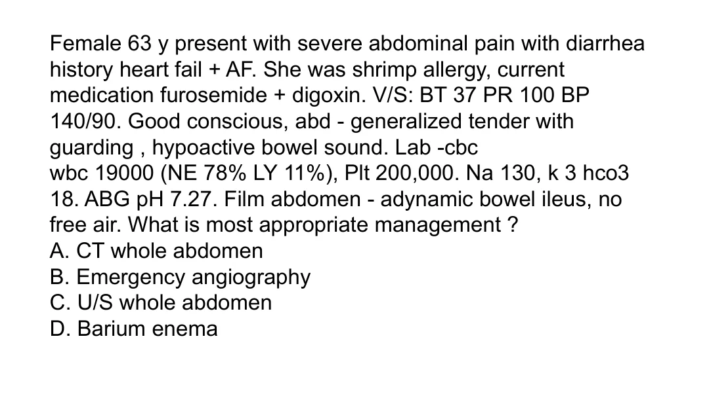
crop
ยังไม่ถูก
A. CT whole abdomen
ถูกต้อง
AF, severe pain, metabolic acidosis, ileus, and guarding suggest acute mesenteric ischemia. If peritonitis/advanced ischemia is emphasized, urgent intervention is needed; if stable diagnosis is emphasized, CTA would be first.
AF, severe pain, metabolic acidosis, ileus, and guarding suggest acute mesenteric ischemia. If peritonitis/advanced ischemia is emphasized, urgent intervention is needed; if stable diagnosis is emphasized, CTA would be first.
D-0026D-Q0026solution_ready
36. หญิง 60 ปี U/D AF on warfarin มาด้วย severe abdominal pain PE: Heart: irregular rhythm Abd: soft, not tender, no guarding EKG: AF rate 110 bpm
crop
ยังไม่ถูก
A.
ถูกต้อง
AF with severe abdominal pain out of proportion to a soft abdomen is classic acute mesenteric ischemia.
Infant poor intake with hypokalemic hypochloremic metabolic alkalosis points to pyloric stenosis.
D-0030D-Q0030solution_ready
55. ให้ตารางเวลามา ตามรูป ถามปัจจัยที่ทำให้ Door to EKG ช้า
crop
ถูกต้อง
The door-to-EKG table/zoomed source crop shows the delayed Door-to-EKG times clustering with Noi more than the other listed factors. This identifies the operator/provider factor as the likely contributor to slow EKG acquisition.
The door-to-EKG table/zoomed source crop shows the delayed Door-to-EKG times clustering with Noi more than the other listed factors. This identifies the operator/provider factor as the likely contributor to slow EKG acquisition.
58. 45 ปี ชาย Chest pain At ER หายแล้ว V/S stable EKG มี ST elevate, ST depress Plan emergency tx แต่ ผู้ป่วย refused เนื่องจากกังวลว่าไม่มีคนรับลูก ทำอย่างไร
crop
ยังไม่ถูก
A. Consult cardio ให้มาคุย
ยังไม่ถูก
B. Ask patient to continue tx due to severity illness
ยังไม่ถูก
C. ตามใจคนไข้ แนะนำไม่ดีก็ต้องมาตรวจ
ยังไม่ถูก
D. ตามใจคนไข้ ให้เซ็นปฏิเสธ
ถูกต้อง
This is a high-risk STEMI/acute coronary syndrome scenario where refusal is driven by a fixable social barrier. The best response is to explain the severity, keep recommending emergency treatment, and actively solve the child-care barrier rather than simply accepting refusal.
E. Ask patient to continue tx and ask for another ให้ดูแลลูก
Rationale
This is a high-risk STEMI/acute coronary syndrome scenario where refusal is driven by a fixable social barrier. The best response is to explain the severity, keep recommending emergency treatment, and actively solve the child-care barrier rather than simply accepting refusal.
Severe vomiting followed by chest pain radiating to the back suggests esophageal rupture/Boerhaave syndrome. CT chest/neck with contrast evaluation is the most appropriate investigation among the listed choices.
The police sent male 35 yr, who was ingest a portion of cocain pocket, he is agitate, T 37 PR 160/min, BP 160/100, physical exam shown abdomen soft, non tenderness, neuro E4V5M6, EKG as below, what appropriate management\nA. diltiazem\nB. amiodarone\nC. adenosine\nD. sodium bicarbonate\nE. synchronize cardioversion
Cocaine packet ingestion with agitation, marked tachycardia, and a concerning ECG can reflect sodium-channel blockade/wide-complex toxicity. Sodium bicarbonate is the appropriate treatment among the options; AV nodal blockers are not appropriate.
133. Poor control HT BP 182/110 HR 120 RR 30 ใจสั่น ปวดหัว ตรวจร่างกายปกติ Lab ดี EKG sinus tachycardia
crop
ยังไม่ถูก
A. Malignant hypertension
ถูกต้อง
Paroxysmal severe hypertension with headache, palpitations/tachycardia, and otherwise normal examination/labs fits catecholamine surges from pheochromocytoma better than uncomplicated essential or malignant hypertension.
Paroxysmal severe hypertension with headache, palpitations/tachycardia, and otherwise normal examination/labs fits catecholamine surges from pheochromocytoma better than uncomplicated essential or malignant hypertension.
16. ชายกิน herbal มา แล้ว HR 170 irregular BP drop ให้ IV แล้วยัง drop ถามกินอะไร ให้ภาพ ECG 12 leads มาให้
crop
ยังไม่ถูก
A. Jimsonweed
ยังไม่ถูก
B. Glory lily
ถูกต้อง
Aconite/monkshood poisoning causes hypotension and malignant irregular tachyarrhythmias after herbal ingestion. This matches the unstable irregular tachycardia scenario.
Aconite/monkshood poisoning causes hypotension and malignant irregular tachyarrhythmias after herbal ingestion. This matches the unstable irregular tachycardia scenario.
Pregnancy after electrical injury should receive fetal assessment when the fetus is viable, even if maternal ECG and symptoms are reassuring. NST is the best listed next step.
Pregnancy after electrical injury should receive fetal assessment when the fetus is viable, even if maternal ECG and symptoms are reassuring. NST is the best listed next step.
74. ชาย 82 ปี u/d dementia, HT อยู่ nursing home agitate, โวยวาย + ผลักเจ้าหน้าที่, ดึงสายน้ำเกลือมา 1 วัน v/s stable PE: WNL EKG: NSR. ถาม 1st line drug
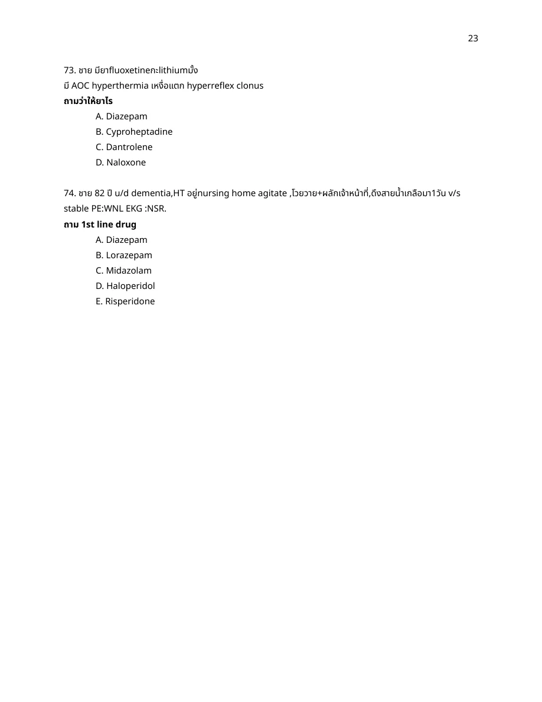
crop
ยังไม่ถูก
A. Diazepam
ยังไม่ถูก
B. Lorazepam
ยังไม่ถูก
C. Midazolam
ถูกต้อง
For acute severe agitation in dementia with stable vital signs and NSR, haloperidol is a standard first-line emergency sedating antipsychotic option. Benzodiazepines can worsen delirium and respiratory risk.
For acute severe agitation in dementia with stable vital signs and NSR, haloperidol is a standard first-line emergency sedating antipsychotic option. Benzodiazepines can worsen delirium and respiratory risk.
123. Chest pain ร้าวไปไหล่ซ้าย EKG: LBBB Sgarbossa: concordant ST elevation at V4 and aVR
crop
ถูกต้อง
Chest pain with LBBB plus concordant ST elevation meeting Sgarbossa criteria should be treated as occlusion MI/STEMI equivalent and the cath/STEMI pathway should be activated.
Chest pain with LBBB plus concordant ST elevation meeting Sgarbossa criteria should be treated as occlusion MI/STEMI equivalent and the cath/STEMI pathway should be activated.
27. ชาย 30 ปี ใจสั่น ไม่มี sign unstable EKG: AF c WPW (ให้ EKG มา) ถาม Mx
crop
ยังไม่ถูก
A. amiodarone
ยังไม่ถูก
B. lidocaine
ยังไม่ถูก
C. synchronized cardioversion
ถูกต้อง
Stable AF with WPW should be treated with a drug that slows accessory pathway conduction; procainamide is preferred among the listed choices. AV nodal blockers can accelerate conduction down the accessory pathway.
Stable AF with WPW should be treated with a drug that slows accessory pathway conduction; procainamide is preferred among the listed choices. AV nodal blockers can accelerate conduction down the accessory pathway.
Female 63 y present with severe abdominal pain with diarrhea history heart fail + AF. She was shrimp allergy, current medication furosemide + digoxin. V/S: BT 37 PR 100 BP 140/90. Good conscious, abd - generalized tender with guarding, hypoactive bowel sound. Lab - cbc wbc 19000 (NE 78% LY 11%), Plt 200,000. Na 130, K 3, HCO3 18. ABG pH 7.27. Film abdomen - adynamic bowel ileus, no free air. What is most appropriate management?\nA. CT whole abdomen\nB. Emergency angiography\nC. U/S whole abdomen\nD. Barium enema
AF, severe abdominal pain, metabolic acidosis, leukocytosis, and ileus strongly suggest acute mesenteric ischemia. In the listed options, emergency angiography best matches urgent vascular diagnosis and possible intervention; shrimp allergy is not a true contraindication to iodinated contrast.
The child has SVT with hypotension, hypoxia, and respiratory distress, so this is unstable SVT. Synchronized cardioversion is indicated immediately, with sedation if it does not delay treatment.
The child has SVT with hypotension, hypoxia, and respiratory distress, so this is unstable SVT. Synchronized cardioversion is indicated immediately, with sedation if it does not delay treatment.
155. ชาย 60 ปีมา ER ด้วยเรื่องเจ็บอก ตรวจร่างกายปกติดี EKG - เส้นเลือดเส้นไหน
crop
ยังไม่ถูก
A. pericardium
ยังไม่ถูก
B. pulmonary a.
ยังไม่ถูก
C. RCA
ยังไม่ถูก
D. LCX
ถูกต้อง
The MI source crop has the LAD option marked, and anterior-wall ischemia/infarction pattern classically localizes to the left anterior descending artery.
The MI source crop has the LAD option marked, and anterior-wall ischemia/infarction pattern classically localizes to the left anterior descending artery.
134. 10 yr boy เล่น syncope 30 min EKG, QT prolong syndrome ให้ management
p15
ถูกต้อง
Syncope with prolonged QT syndrome is treated first-line with a nonselective beta blocker such as propranolol or nadolol. ICD is reserved for higher-risk/recurrent cases despite medical therapy or arrest.
Syncope with prolonged QT syndrome is treated first-line with a nonselective beta blocker such as propranolol or nadolol. ICD is reserved for higher-risk/recurrent cases despite medical therapy or arrest.
75. Male 57 years old, U/D heart disease + COPD, presented with palpitation 2 hr. Deny chest pain, dyspnea, orthopnea, leg edema. T36.6, HR 168, RR 22, BP 109/68 (จําไม่ได้เป้ะ แต่ไม่ drop). PE ~ lung clear. POCUS preserved LVEF, มีบรรยาย echo มาอีกแต่ปกติหมด no structural heart abnormality, lung A-profile both. EKG as following (จําไม่ได้เป้ะ ๆ แต่คิดว่าเป็น regular wide QRS) What is the next appropriate management?
crop
ถูกต้อง
A stable regular wide-complex tachycardia with no structural heart abnormality can be managed with adenosine as a diagnostic and therapeutic step when SVT with aberrancy is possible. Cardioversion is reserved for instability.
A stable regular wide-complex tachycardia with no structural heart abnormality can be managed with adenosine as a diagnostic and therapeutic step when SVT with aberrancy is possible. Cardioversion is reserved for instability.
76. Male 30 years old, no U/D, presented with sharp, pleuritic chest pain, getting worse when lying supine and getting better when sitting upright. Deny Hx trauma, contact with other patients, recent travel. V/S T37.6, HR 110, BP140/100, RR 22, SpO2 98%. PE - HEENT - not pale conjunctiva, Lung - equal & clear both, Heart - no murmur, Leg - no edema. Troponin 0.1 (normal <0.04) EKG as following What is appropriate management?
crop
ยังไม่ถูก
A. Aspirin
ยังไม่ถูก
B. NSAIDs
ยังไม่ถูก
C. Prednisolone
ยังไม่ถูก
D. Repeat EKG next 1 hr
ถูกต้อง
Sharp pleuritic chest pain worse supine and better sitting up with a compatible ECG is acute pericarditis. First-line therapy is NSAID plus colchicine unless contraindicated.
Sharp pleuritic chest pain worse supine and better sitting up with a compatible ECG is acute pericarditis. First-line therapy is NSAID plus colchicine unless contraindicated.
77. Female 25 years old. Denied U/D. Presented with syncope ตอนกําลังทํางาน, ไม่มี chest pain หรือ familial hx ก่อนหน้า มาอีอา ตื่นดี V/S ดี ตรวจร่างกาย เจอ crescendo-decrescendo อะไร สักอย่าง EKG as following What is the most likely diagnosis?
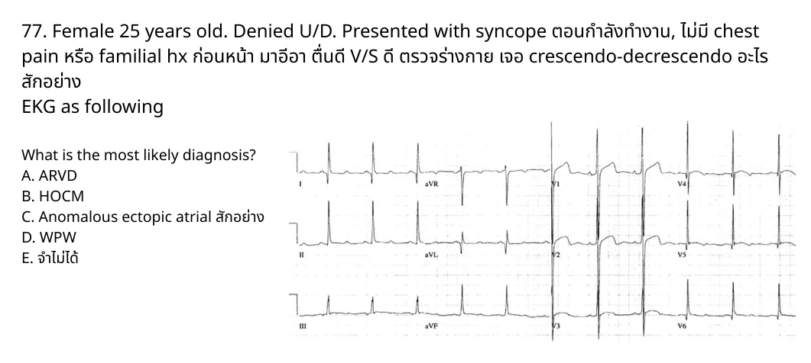
crop
ยังไม่ถูก
A. ARVD
ถูกต้อง
Syncope with a crescendo-decrescendo systolic murmur in a young patient is most consistent with hypertrophic obstructive cardiomyopathy.
79. Pt ชายอายุประมาณ 30ปี present ด้วย chest discomfort and palpitation v/s ดี BP ไม่drop, lung clear, Cap refill < 2 sec ให้ EKG เป็น AF with WPW ถาม management
crop
ยังไม่ถูก
A. Digoxin
ยังไม่ถูก
B. Verapamil
ยังไม่ถูก
C. Adenosine
ถูกต้อง
Stable AF with WPW should avoid AV nodal blockers such as digoxin, verapamil, and adenosine. With procainamide absent from the options, amiodarone is the best listed choice.
Stable AF with WPW should avoid AV nodal blockers such as digoxin, verapamil, and adenosine. With procainamide absent from the options, amiodarone is the best listed choice.
121.SSS on pace รู้สึก syncope ไป 10min มาที่ ER BP120/80 HR 40 sat 100 EKG strip A: Oversensing B: Undersensing (Failure to sense) C: Failure to capture
The source crop labels the rhythm as failure to pace from oversensing. Oversensing suppresses pacer output, causing bradycardia/syncope despite an implanted pacemaker.
A 3-month-old with poor feeding, failure to thrive, tachypnea, crackles, hepatomegaly, harsh holosystolic murmur at the left lower sternal border, and biventricular enlargement fits a significant ventricular septal defect.
A 3-month-old with poor feeding, failure to thrive, tachypnea, crackles, hepatomegaly, harsh holosystolic murmur at the left lower sternal border, and biventricular enlargement fits a significant ventricular septal defect.
82. เด็ก 3 ปี แม่พามา วันนี้ irritable, lethargic especially during feeding BT 37.2 RR4 BP70/50 HR240 PE: ปกติหมด neuro active ดี. ได้ให้ IV NSS แล้ว EKG: SVT rate 240 ถาม Mx
crop
ยังไม่ถูก
A. NSS
ยังไม่ถูก
B. Carotid massage
ยังไม่ถูก
C. Adenosine
ถูกต้อง
SVT at 240 with lethargy, severe bradypnea/respiratory failure, and hypotension (70/50) is unstable. Unstable pediatric tachyarrhythmia requires synchronized cardioversion. Adenosine is for stable regular narrow-complex SVT or can be considered only if it does not delay cardioversion.
SVT at 240 with lethargy, severe bradypnea/respiratory failure, and hypotension (70/50) is unstable. Unstable pediatric tachyarrhythmia requires synchronized cardioversion. Adenosine is for stable regular narrow-complex SVT or can be considered only if it does not delay cardioversion.
References
- RCH Clinical Practice Guideline, SVT: unstable child with shock/altered conscious state needs synchronized cardioversion. https://www.rch.org.au/clinicalguide/guideline_index/Supraventricular_Tachycardia_SVT/
D-0053D-Q0053solution_ready
ชาย 69 ปี มีอาการสับสนมา 2 วัน หลังจากทำงานมีอาการเหนื่อย lethargy อ่อนเพลีย สับสน น้ำหนักลดลง 10 kg in 2 mo E3V4M6 blood sugar 110 BUN 3 Cr 0.8 Na 125 K 4 Cl 110 HCO3 18 UNa 50 Uosm 343 จะให้การวินิจฉัย
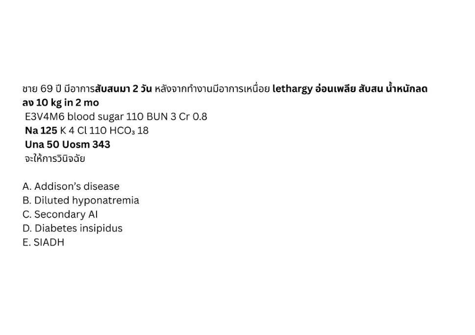
crop
ยังไม่ถูก
A. Addison’s disease
ยังไม่ถูก
B. Diluted hyponatremia
ยังไม่ถูก
C. Secondary AI
ยังไม่ถูก
D. Diabetes insipidus
ถูกต้อง
Hyponatremia with inappropriately concentrated urine and high urine sodium with normal potassium/renal function supports SIADH.
Male 38 year old chronic alc. Drinking, DM on MFM 2x2, dyspnea after heavy drinking for 2 day, At ER PE: good consciousness, tachypnea (ไม่ได้ตรวจร่างกายอื่น) lab BS 150, ABG 7.25, PCO2 25, PO2 130, HCO3 10, b-OH 12, urine ketone neg Dx? 1. Methanol intox 2. DKA 3. AKA 4. Euglycemic DKA 5. MALA
A 54-year-old woman with diabetes mellitus present to the ED with confusion and seizure for twodays. Her seizure has already stop at ED. Her vital signs are BT 37.5 C, RR 18/min, HR 100/min, BP 98/55 mmHg. She had dry lips and tongue, confuse without focal neurological signs. The laboratory reveal blood sugar of 950, BUN 40 mg/dL, Na 119 mmol/L, K 5 mmol/L, Cl 92 mmol/L, NaHCO3 20 mmol/L. Arterial blood gas show pH 7.35, pCO2 40, HCO3 19 mmol/L, pO2 80. Her body weight is 60 kg.
What is the next appropriate management?
crop
ยังไม่ถูก
A. 3% NaCl
ยังไม่ถูก
B. phenytoin
ถูกต้อง
This is hyperosmolar hyperglycemic state with dehydration and seizures/confusion; initial therapy is isotonic saline bolus before insulin.
A 45-year-old female was found unconscious and brought to the ED by her family. Physical examination revealed BT 35.5 C, BP 71/48 mmHg, HR 59/min, RR 18/min. Her face and extremities were edematous and non-pitting edema. Her skin was dry, cool, slightly mottled and desquamated but no evidence of petechiae or purpura. Her pupils were 3 mm and sluggish both eyes. She also shown decerebrated gestures in response to external painful stimuli and her Babinski's sign was plantar flexed at both feet. DTX 104 mg% and ECG 12 leads were sinus bradycardia. She was intubated and an inotropic agent was infused after did not respond to fluid therapy. Her CT brain appeared normal.
Which of the following is the most useful further investigation?
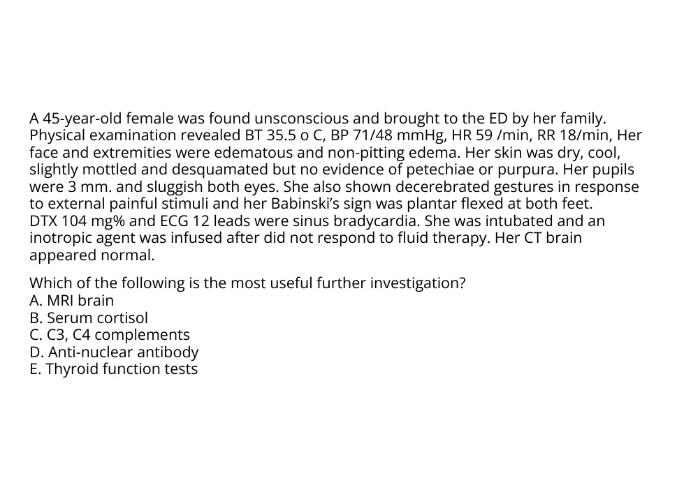
crop
ยังไม่ถูก
A. MRI brain
ยังไม่ถูก
B. Serum cortisol
ยังไม่ถูก
C. C3, C4 complements
ยังไม่ถูก
D. Anti-nuclear antibody
ถูกต้อง
The presentation is most suspicious for myxedema coma; thyroid function testing is the most useful confirmatory investigation.
A 45-year-old man presented to emergency department compliant of sudden palpitation. He stated that he had headache that not persisted more than an hour, but sporadic and often accompanied by sudden whole body sweating and palpitation without chest pain. He had abdominal and back pain. His body temperature was 36.8 C and his blood pressure was 190/120 mmHg, pulse rate was 112/minute with regular rate, respiratory rate was 24/minutes without respiratory distress, and oxygen saturation was 98% on room air. ECG 12-leads shown sinus tachcardia with no ST-T change. Other physical examination was unremarkable with the exception of moist palms, mild tender at abdomen and back.
Which test is the most likely to confirm diagnosis
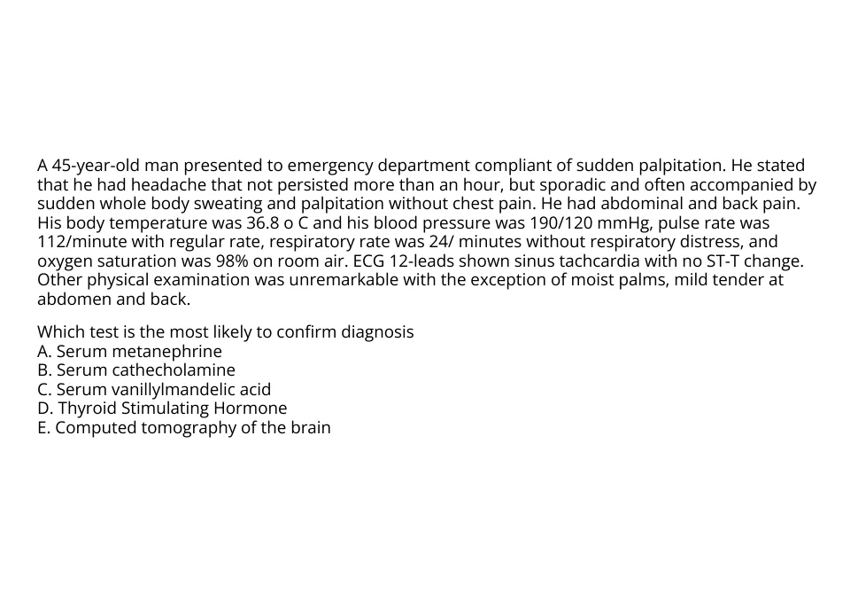
crop
ถูกต้อง
Plasma/serum metanephrines are the preferred biochemical test for pheochromocytoma.
A 39-year-old woman was brought into the emergency department by her family who stated that she had 4 days of diarrhea and now started acting "crazy" with mood swings and confusion. The family stated that she usually took a medication for a problem with her neck. Vital sign: BT 38.6 C, RR 22/min, HR 140/min, BP 130/45 mmHg. Physical examination showed confuse, heart - irregular tachycardia, normal S1S2, no murmur; lung - clear; ECG revealed atrial fibrillation with a normal QRS complex.
After you address the airway, breathing and circulation (ABCs). Which of the following is the most appropriate next step in management?
crop
ยังไม่ถูก
A. Ceftriaxone
ยังไม่ถูก
B. Ciprofloxacin
ถูกต้อง
Thyroid storm after ABCs needs thionamide therapy; PTU is preferred in storm because it blocks synthesis and peripheral conversion.
A Thai male 30 year old with asthma, presents with palpitation for 2 hours. Vital sign: BT 39 C HR 160 irregular BP 150/100 mmHg RR 24 O2sat 90% RA. He has agitation and confusion. On physical examination reveal exophthalmos, thyroid gland enlargement, fine crepitation of both lungs, and pitting edema of both legs. EKG shows atrial fibrillation rate 160 bpm. Laboratory results show: TSH 0.02 uIU/ml (0.27-4.2), FT3 8.9 pg/ml (2.02-4.43), FT4 9.8 ng/dL (0.93-1.71). Which is the most appropriate management?
crop
ยังไม่ถูก
A. Esmolol 250 mcg/kg IV load to inhibit peripheral adrenergic effect.
ถูกต้อง
In thyroid storm with asthma/pulmonary congestion, beta blockade is risky; PTU is the best listed core therapy.
ยังไม่ถูก
C. Lugol solution 10 drops after giving PTU at least 1 hour to prevent thyroid hormone reabsorption.
ยังไม่ถูก
D. Hydrocortisone 300 mg IV for inhibit thyroid hormone synthesis.
ยังไม่ถูก
E. MMI 20 mg oral for inhibit peripheral adrenergic effect.
ชาย 25 ปี วูบขณะวิ่ง marathon. BT 40, PR 140, good consciousness. EKG: NSR, no ST change.
crop
ยังไม่ถูก
A. Heat cramp
ถูกต้อง
Core temperature is high after exertion, but he has good consciousness and no neurologic dysfunction. Heat stroke requires CNS dysfunction such as confusion, seizure, delirium, or coma; exertional hyperthermia without CNS dysfunction fits heat exhaustion better than heat stroke.
Core temperature is high after exertion, but he has good consciousness and no neurologic dysfunction. Heat stroke requires CNS dysfunction such as confusion, seizure, delirium, or coma; exertional hyperthermia without CNS dysfunction fits heat exhaustion better than heat stroke.
References
- CDC/NIOSH heat illness summary: heat stroke has confusion, altered mental status, slurred speech, loss of consciousness, or seizures; heat exhaustion can include dizziness, nausea, weakness, and elevated temperature. https://www.cdc.gov/niosh/heat-stress/about/illnesses.html
D-0063D-Q0063solution_ready
23. โดนไฟดูด high voltage(13,000) แผลรูเข้าที่มือขวา รูออกที่แขนขวา ปวดบวมแขน pulse weak, cap refill 4 sec, EKG ดี Mx
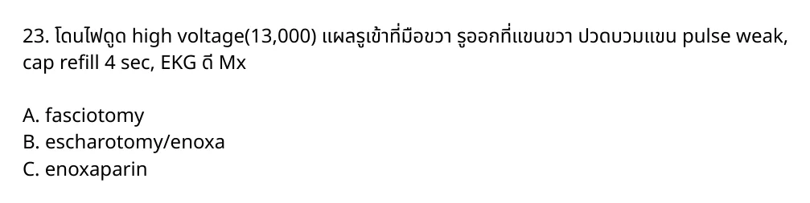
crop
ถูกต้อง
High-voltage electrical injury with entry/exit wounds, progressive arm swelling, weak pulse, and delayed capillary refill suggests deep muscle injury with compartment syndrome/vascular compromise. Fasciotomy is preferred over observation or anticoagulation when compartment syndrome is suspected.
High-voltage electrical injury with entry/exit wounds, progressive arm swelling, weak pulse, and delayed capillary refill suggests deep muscle injury with compartment syndrome/vascular compromise. Fasciotomy is preferred over observation or anticoagulation when compartment syndrome is suspected.
References
- StatPearls point-of-care electrical injuries: high-voltage injuries can cause deep tissue injury and compartment syndrome requiring surgical evaluation/decompression. https://www.statpearls.com/point-of-care/20967
Even though the mother is clinically well with a normal ECG after low-voltage household shock, pregnancy adds fetal risk. With fetal movement present and no maternal instability, the next step among the options is fetal monitoring with NST rather than discharge, urgent ultrasound, or routine troponin/CPK.
Even though the mother is clinically well with a normal ECG after low-voltage household shock, pregnancy adds fetal risk. With fetal movement present and no maternal instability, the next step among the options is fetal monitoring with NST rather than discharge, urgent ultrasound, or routine troponin/CPK.
References
- Electrical injury reviews recommend fetal assessment/monitoring after maternal electrical shock when pregnancy is viable, even if maternal findings are reassuring. https://www.ncbi.nlm.nih.gov/books/NBK448087/
D-0065D-Q0065solution_ready
173. A 6-year-old boy is brought to the emergency room with a 3-h history of fever to 39.5 C and sore throat. The child appears alert but anxious and toxic. He has mild inspiratory stridor and is drooling.
Which of the following should be performed immediately?
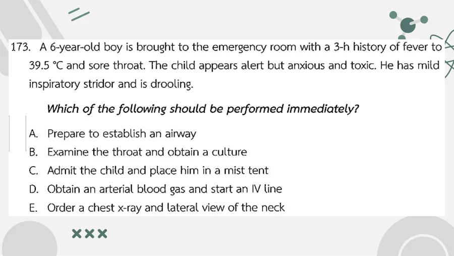
crop
ถูกต้อง
Toxic child with drooling and inspiratory stridor suggests epiglottitis; airway preparation is the immediate priority.
ยังไม่ถูก
B. Examine the throat and obtain a culture
ยังไม่ถูก
C. Admit the child and place him in a mist tent
ยังไม่ถูก
D. Obtain an arterial blood gas and start an IV line
ยังไม่ถูก
E. Order a chest x-ray and lateral view of the neck
Toxic child with drooling and inspiratory stridor suggests epiglottitis; airway preparation is the immediate priority.
D-0066D-Q0066solution_ready
141. A 6 year old, fully immunized boy is brought to the emergency room with a 3 hour of fever to 39.5 C and sore throat. The child appears alert, but anxious and toxic. He has mild inspiratory stridor and drooling. He is sitting on the examination table leaning forward with his neck extended.
Which of the following is the most appropriate immediate management of the patient
crop
ยังไม่ถูก
A. Examine the throat and obtain a culture
ยังไม่ถูก
B. Administer a dose of nebulized epinephrine
ยังไม่ถูก
C. Admit the child and place him in a mist tent
ยังไม่ถูก
D. Obtain an arterial blood gas and start an IV line
ถูกต้อง
The presentation is epiglottitis; airway control should be planned with backup surgical airway support.
LR+ is sensitivity/(1-specificity) = 0.70/0.10 = 7; pretest odds 95/5 becomes 133:1, or about 99.2%.
D-0068D-Q0068solution_ready
121. เด็กถูกผึ้งต่อยมา เหนื่อย เขียว sat drop 85 bp drop hr ช้า lung wheeze: anaphylaxis ให้ o2 กับ adrenaline im แล้ว แต่ยังมีเขียว cyanosis sat drop 88 EKG hr ช้า ทำไรต่อ
crop
ยังไม่ถูก
A. ติด pace
ยังไม่ถูก
B. ......
ถูกต้อง
Persistent cyanosis with bradycardia despite IM epinephrine and oxygen indicates impending respiratory failure requiring airway control.
Pulse oximetry is falsely normal; ABG PaO2 may be normal but co-oximetry shows elevated carboxyhemoglobin
Rationale
Standard pulse oximetry cannot distinguish oxyhemoglobin from carboxyhemoglobin in CO poisoning.
D-0071D-Q0071solution_ready
18. 50 year old presented with AOC, seizure. At ER stop seizure. EKG: tall r avr, wide qrs complex (ให้รูป EKG มา). What is the best next step in management?
crop
ยังไม่ถูก
A. Phenytoin
ยังไม่ถูก
B. phenobarbital
ถูกต้อง
Seizure plus wide QRS and tall R in aVR indicates sodium-channel blocker/TCA toxicity. Sodium bicarbonate is the treatment.
Paroxysmal headache, palpitations, sweating, severe hypertension, tremor, and negative drug screen suggest pheochromocytoma; alpha blockade is required before beta blockade.
77. Female 25 years old. Denied U/D. Presented with syncope ตอนกำลังทำงาน, ไม่มี chest pain หรือ familial hx ก่อนหน้า มาอีอา ตื่นดี V/S ดี ตรวจร่างกาย เจอ crescendo-decrescendo อะไรสักอย่าง EKG as following What is the most likely diagnosis?
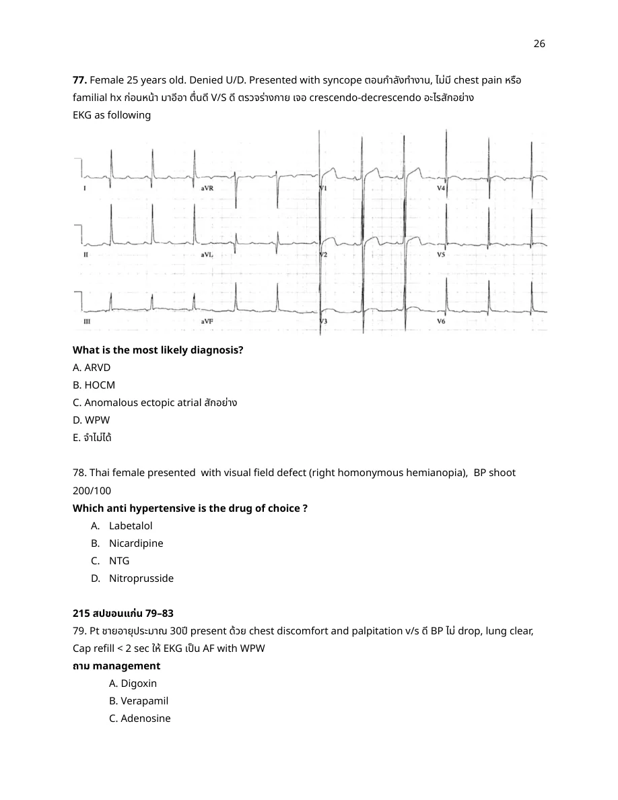
crop
ยังไม่ถูก
A. ARVD
ถูกต้อง
Syncope with a crescendo-decrescendo systolic murmur in a young patient is most consistent with hypertrophic cardiomyopathy.
135. งานวิ่งกีฬา ญ 40ปี หมดสติ เพื่อนบอกหมดสติไปหลายนาที พอเรียกได้สติ คนไข้ปลุกตื่นได้แต่ไม่ตอบ ไม่ยอมขยับซีกขวา PE: cvs no murmur, neuro no neurodeficit,e4v5m6,no stiff neck ถามmost appropiate next management?
crop
ยังไม่ถูก
A. ส่งโรงพยาบาล
ยังไม่ถูก
B. IV diazepam
ถูกต้อง
Collapse during a running event requires cardiac syncope screening. She is not actively seizing and neuro exam is normal, so 12-lead ECG is the best listed next step.
Collapse during a running event requires cardiac syncope screening. She is not actively seizing and neuro exam is normal, so 12-lead ECG is the best listed next step.
100. หญิง 26 ปี G1 GA 29 มาด้วยปวดหัว ปวดท้องบนขวา ลูกดิ้นน้อยลง มีประวัติบวม 1 สัปดาห์ PE: V/S - T 37.2, P 108, RR 20, BP 162/104 GA - alert, anxious Eye - no papilledema H&L - normal Abd - tender RUQ, no rebound, no guarding NS - reflex 3+, no clonus Ext - pitting edema both legs Lab: CBC - Hb 11.5, Hct 34, WBC 12500, Platelet 98000 Chem - BUN 18, Cr 1.1, Na 138, K 4.2, Cl 106, HCO3 22, LDH 390 LFT - AST 70, ALT 65, ALP 140, TB 1.4, DB 0.3, Alb 3.1 Coag - normal U/A - protein 3+ UPCR - 0.5 g/g
ถาม next appropriate management?
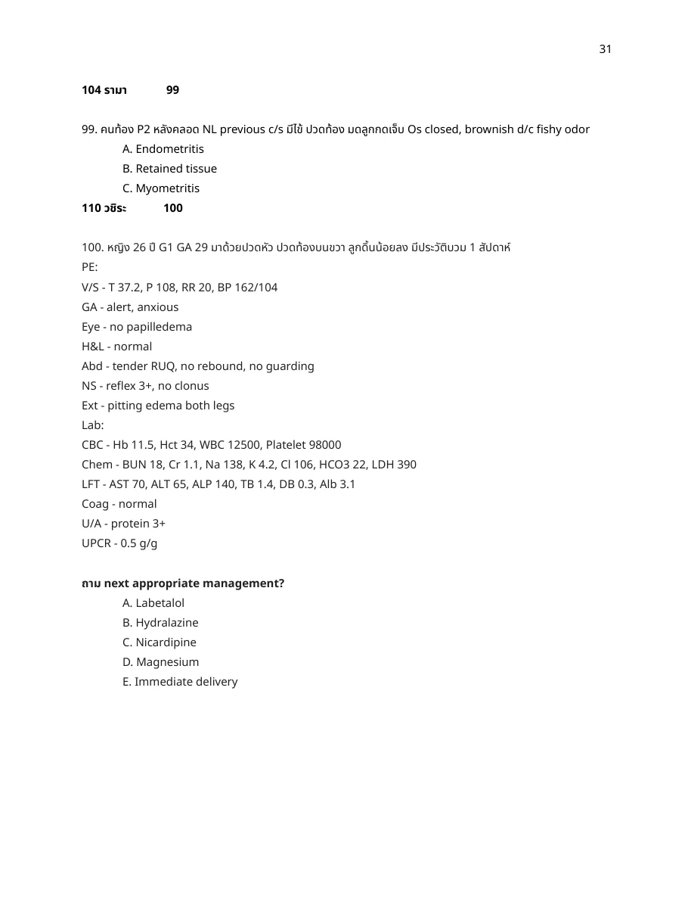
crop
ยังไม่ถูก
A. Labetalol
ยังไม่ถูก
B. Hydralazine
ยังไม่ถูก
C. Nicardipine
ถูกต้อง
This is preeclampsia with severe features: severe-range systolic BP, headache/RUQ pain, hyperreflexia, thrombocytopenia below 100,000, transaminitis, and proteinuria. The next key management from the choices is magnesium sulfate for seizure prophylaxis while BP control, steroids/OB planning, and delivery timing are arranged.
This is preeclampsia with severe features: severe-range systolic BP, headache/RUQ pain, hyperreflexia, thrombocytopenia below 100,000, transaminitis, and proteinuria. The next key management from the choices is magnesium sulfate for seizure prophylaxis while BP control, steroids/OB planning, and delivery timing are arranged.
100. หญิง 26 ปี G1 GA 29 มาด้วยปวดหัว ปวดท้องบนขวา ลูกดิ้นน้อยลง มีประวัติบวม 1 สัปดาห์ PE: V/S - T 37.2, P 108, RR 20, BP 162/104 GA - alert, anxious Eye - no papilledema H&L - normal Abd - tender RUQ, no rebound, no guarding NS - reflex 3+, no clonus Ext - pitting edema both legs ถาม next appropriate management
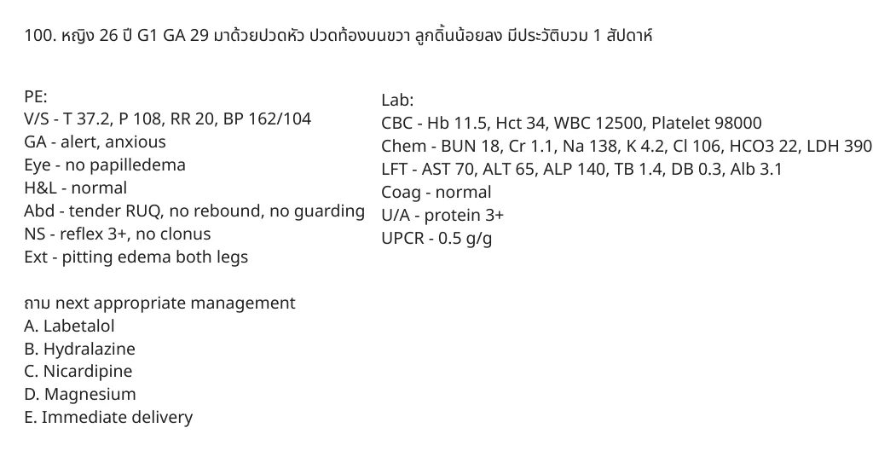
crop
ยังไม่ถูก
A. Labetalol
ยังไม่ถูก
B. Hydralazine
ยังไม่ถูก
C. Nicardipine
ถูกต้อง
Duplicate of A12-0026. Preeclampsia with severe features at 29 weeks requires magnesium sulfate for seizure prophylaxis as the key immediate therapy among the options.
ยังไม่ถูก
E. Immediate delivery
Lab:
CBC - Hb 11.5, Hct 34, WBC 12500, Platelet 98000
Chem - BUN 18, Cr 1.1, Na 138, K 4.2, Cl 106, HCO3 22, LDH 390
LFT - AST 70, ALT 65, ALP 140, TB 1.4, DB 0.3, Alb 3.1
Coag - normal
U/A - protein 3+
UPCR - 0.5 g/g
Duplicate of A12-0026. Preeclampsia with severe features at 29 weeks requires magnesium sulfate for seizure prophylaxis as the key immediate therapy among the options.
Stable nursing-home dementia patient with agitation/assaultive behavior and line pulling. Nonpharmacologic measures are preferred first, but among the listed drugs, an antipsychotic is the appropriate medication class. Risperidone is preferred over benzodiazepines for behavioral/psychotic agitation in dementia when medication is necessary; haloperidol is more often used for acute delirium but has higher EPS risk.
References
- NICE Delirium guideline cautions against benzodiazepines and supports short-term antipsychotic only when needed for distress/risk. https://www.nice.org.uk/guidance/cg103
D-0084D-Q0084solution_ready
Case male 70 yr d BPH มาด้วยคลื่นไส้อาเจียน 1 วัน ตรวจไม่พบ pitting edema Lab Na 145 BUN 25 Cr 2.8 Urine Na 45 Urine Cr 10 Urine osmol 345 ถาม cause AKI A. Prerenal B. Post renal C. Interstitial nephritis D. ATN E. Acute glomerulonephritis
FeNa is high from the source values ((45 x 2.8) / (145 x 10) x 100, about 8.7%) and urine osmolality is not maximally concentrated, favoring intrinsic AKI/ATN over prerenal or postrenal AKI.
D-0085D-Q0085solution_ready
Dx sepsis Cr raising ให้ plasma urine Na and osmole ถามว่าเกิดจากอะไร A. prerenal B. post renal C. renal D. rhabdo E. CKD
Abdominal pain with atrial flutter and shock physiology raises mesenteric ischemia.
D-0087D-Q0087solution_ready
50 ปี pain at chest+abdomen after swallowing 1 hr BT 39 PR 110 RR 22 BP 150/90 O2sat 98 PE normal EKG: no ischemic pattern ถาม next step management A. Flexible esophagoscopy B. Transthoracic echocardiography C. Transesophageal echocardiography D. CT neck and chest with contrast E. Water soluble contrast with esophagoscope
Acute chest/abdominal pain after swallowing with fever raises perforation/deep injury; CT neck/chest localizes complications.
D-0088D-Q0088solution_ready
A 50-year-old man complained with severe vomiting for 2 days and today he developed sudden chest pain in the middle chest. He had no fever nor diarrhea. He had alcohol dependence and had hypertension as underlying disease. Physical examination revealed BT 36.8 C, HR 120/min, RR 24/min, BP 180/90 mmHg, oxygen saturation 95%; heart - regular tachycardia, normal S1S2, no murmur; abdomen - soft, tender at epigastrium. ECG showed sinus tachycardia without ST-T wave abnormalities. What is the most likely diagnosis? A. Pancreatitis B. Aortic dissection C. Pulmonary embolism D. Esophageal perforation E. Spontaneous pneumomediastinum
Severe vomiting followed by sudden chest pain after alcohol dependence is Boerhaave syndrome.
D-0089D-Q0089solution_ready
A 60-year-old man, DM, HT coronary artery disease, presented with severe abdominal pain for 3 hours. He denied fever, nausea or vomiting. Physical examination revealed T 37 C, PR 100/min, BP 120/80 mmHg, RR 20/min, generalized mild tenderness, no guarding or rigidity, hypoactive bowel sound, other within normal limits. Laboratory shown CBC Hb 12 mg/dl, Hct 36%, WBC 12,000/mm3 (N 80%, L20%), platelet 150,000, BUN 28 mg/dl, Cr 1.4 mg/dl, Na 136 mEq/L, K 5.9 mEq/L, Cl 98 mEq/L, HCO3 10 mEq/L, POCT glucose 200 mg/dl. What is the most appropriate investigation? A. Blood lactate B. MRI abdomen C. CTA abdomen D. Plain film abdomen E. Ultrasound abdomen
Suspected acute mesenteric ischemia is best investigated with CT angiography when stable enough.
D-0090D-Q0090solution_ready
A 40-year-old male had BP190/95 mmHg with generalized weakness about grade IV of motor power of his limbs. His laboratory investigations was shown: Hb 11.0 g/dL, WBC 9,800 cells/µL, platelet 250,000 cells/µL, glucose 90 mg/dL, BUN 14 mg/dL, Cr 0.8 mg/dL, Na 152 mEq/L, K 3 mEq/L, Cl 100 mEq/L, CO2 30 mEq/L and his spot urine was shown osmolarity 400 mOsm/kg and urine electrolytes: sodium 35 mEq/L, potassium 60 mEq/L, chloride 32 mEq/L. Which of the following is the most appropriate further investigation? A. Renin B. Cortisol C. Aldosterone D. Arterial blood gas E. CT brain with contrast
Hypertension, hypokalemia, and metabolic alkalosis suggest primary hyperaldosteronism; aldosterone/renin testing is indicated.
D-0091D-Q0091solution_ready
A 50-year-old female had come to the hospital because of dizziness and fatigue for 3 days. She looked mildly pale. Her laboratory investigations were shown: Hb 6.5 g/dL, WBC 7,800 cells/uL, platelet 170,000 cells/uL, BUN 28 mg/dL, Cr 1.2 mg/dL, Na 120 mEq/L, K 3.7 mEq/L, Cl 95 mEq/L, CO2 24 mEq/L, blood sugar 180 mg/dL, urine osmolarity 60 mOsm/L, urine creatinine 48 mEq/L and urine sodium 60 mEq/L. Which of the following is the most possibly caused in this patient?\nA. Hypothyroidism\nB. Primary polydipsia\nC. Nephrotic syndrome\nD. Glucocorticoids deficiency\nE. Syndrome of inappropriate secretion of antidiuretic hormone
The reviewed source page is a hyponatremia algorithm; the stem gives dehydration with urine osmolality around 300, supporting hypovolemic hyponatremia from volume loss.
D-0093D-Q0093solution_ready
คนไข้ชาย 45 ปี มาด้วยอาการอ่อนเพลีย BP 110/80 lab Na 135 K 3.0 HCO3 30 มั้ง เกิดจากอะไร\nA. Amphotericin\nB. HCTZ\nC. primary aldosteronism
Hyperkalemia with sine-wave/widened QRS ECG requires immediate IV calcium stabilization.
D-0098D-Q0098solution_ready
A 4-year-old girl who had cerebral palsy from head injury last year was brought to emergency department due to seizure for 10 minutes. She had diarrhea and vomiting for 3 days. Seizure was stopped after she got intravenous diazepam 1 dose. Physical examination revealed BT 37 C, RR 42/min, HR 96/min, BP 80/50 mmHg, drowsiness, dry lips, sunken eyeball, capillary refill 1 second, motor at least gr IV all, DTR 1+ all, others - unremarkable. Laboratory investigation showed Hb 14, Hct 40, WBC 11,200 (N 60, L 32, M 5), platelet 140,000, blood sugar 90, BUN 11.2, Cr 1.2, Na 112, K 4.3, Cl 102, HCO3 20, urine Na 40. What could be the most likely cause of this abnormality?
p37
ยังไม่ถูก
A. SIADH
ยังไม่ถูก
B. Gastroenteritis
ยังไม่ถูก
C. Primary polydipsia
ถูกต้อง
Hyponatremia with dehydration and high urine sodium after brain injury favors cerebral salt wasting over SIADH.
Hyponatremia with dehydration and high urine sodium after brain injury favors cerebral salt wasting over SIADH.
D-0099D-Q0099solution_ready
22. 56 man construction worker, มาด้วย substernal chest pain radiate to neck dyspnea then collapse, at ER ตื่น V/S BP 80/40 HR 150 PE lung fine crep both lung, Heart: Diastolic blowing murmur radiate to neck gr 2, JVP engorge with corrigan pulse, EKG diffuse STD with STE lead I ถาม Imaging modality of choice:
crop
ยังไม่ถูก
A. TEE
ยังไม่ถูก
B. CAG
ยังไม่ถูก
C. Aortogram
ถูกต้อง
Chest pain radiating to the neck with shock, acute aortic regurgitation signs, JVP engorgement, and ischemic ECG changes fits acute aortic dissection; CTA is the main diagnostic imaging when obtainable.
Chest pain radiating to the neck with shock, acute aortic regurgitation signs, JVP engorgement, and ischemic ECG changes fits acute aortic dissection; CTA is the main diagnostic imaging when obtainable.
D-0101D-Q0101solution_ready
84. Male 27 Y/O presented with extremely agitation and chest pain. He state that he snorting Cocaine all after afternoon. His V/S BT 38 C PR 112 BP 215/130 SpO2 96% PE WNL CXR normal EKG ainus tachycardia rate 116 bpm. What is most appropriate Mx?
crop
ยังไม่ถูก
A. Esmolol
ยังไม่ถูก
B. Labetalol
ยังไม่ถูก
C. Diltiazem
ยังไม่ถูก
D. Haloperidol
ถูกต้อง
Cocaine toxicity with chest pain, hypertension, and agitation is first treated with benzodiazepines.
Cocaine toxicity with chest pain, hypertension, and agitation is first treated with benzodiazepines.
D-0102D-Q0102solution_ready
11. Female 34 yr brought by her parent after suicidal attempt ingestion some drugs. She had nausea and vomiting, AOC 2 hr after ingestion. V/S T 37c P100 BP 149/90 RR20 O2sat 95%. Heart lung normal. Abd mild tender epigastrium. After evaluation she loss of consciousness and found cardiac arrest. EKG sine wave then monomorphic VT (มีรูป). Lab ABG ph 7.4 PCO2 40 PO2 80 lactate 4, elyte K 7.5. What is toxin?
crop
ยังไม่ถูก
A. Cyanide
ถูกต้อง
GI symptoms, marked hyperkalemia, and ventricular dysrhythmia after drug ingestion are most consistent with severe digoxin poisoning.
A and B. Oral hydration plus stress-dose/triple-dose prednisolone
Rationale
Known adrenal insufficiency during febrile illness requires sick-day steroid escalation and hydration if the patient can tolerate oral intake.
D-0104D-Q0104solution_ready
75. Male 57 years old, U/D heart disease + COPD, presented with palpitation 2 hr. Deny chest pain, dyspnea, orthopnea, leg edema. T36.6, HR 168, RR 22, BP 109/68 (จำไม่ได้เป้ะ แต่ไม่ drop). PE ~ lung clear. POCUS preserved LVEF, มีบรรยาย echo ปรกติแต่มันหมด no structural heart abnormality, lung A-profile both. EKG as following (จำไม่ได้เป้ะๆ แต่คิดว่าเป็น regular wide QRS). What is the next appropriate management?
crop
ยังไม่ถูก
A. Adenosine
ถูกต้อง
Stable regular wide-complex tachycardia is treated as VT; IV amiodarone is an appropriate pharmacologic option.
Stable AF with WPW should avoid AV nodal blockers such as digoxin, verapamil, and adenosine. The duplicate combined-2025 source shows the missing options D/E and resolves the same item as amiodarone when procainamide is absent.
D-0106D-Q0106solution_ready
83. หญิง obese, กินยาคุม, นั่งเครื่องบิน มาด้วยหอบ ไอ hemoptysis HR 140 SpO2 RA 88 BP drop, EKG Sinus tachycardia S1Q3T3, Echo RV dilate, TRPG 48 ถาม next appropriate investigation
crop
ถูกต้อง
PE with shock and RV dilation is highly likely; if an investigation is requested and feasible, CTPA is the diagnostic test.
PE with shock and RV dilation is highly likely; if an investigation is requested and feasible, CTPA is the diagnostic test.
D-0107D-Q0107solution_ready
86. Male 65yr, UD severe COPD, 2day wheezing with purulent productive cough, then 1d worsening dyspnea ญาติบอก new confusion. PE: BT37.5 c PR112/min. RR34 SpO2 85% RA. GA: anxious, orientate to person only, Lung: decrease air entry, diffuse wheezing, prolonged expiration / CXR: no infiltration or consolidation, flattened diaphragm / ABG pH7.25 pCO2 70, pO2 50, HCO3 30. What is the most appropriate next step Mx?
crop
ถูกต้อง
COPD exacerbation with hypercapnic acidosis and preserved airway protection is an indication for NIV.
Orthopnea, crackles, and acute dyspnea are consistent with acute decompensated heart failure/pulmonary edema.
D-0117D-Q0117solution_ready
ชาย 60 ปี severe chest pain after forceful vomiting vs BT37 HR 86 BP 110/70 RR24 sat 96 PE all normal ให้ EKG and CXR > bilat pleural effusion ถาม investigation of choice
Severe chest pain after forceful vomiting with pleural effusion suggests Boerhaave syndrome. Duplicate Boerhaave investigation items in A14 list esophagogram as the intended diagnostic investigation.
D-0118D-Q0118solution_ready
ชาย 50 ปี u/d COPD with respiratory failure on ETT หลังใส่ ETT 15 นาทีเหนื่อยขึ้น ให้ EKG: STD V1-6 ตอนนี้ setting: PCV mode IP 17 PEEP 5 I:E 1:3 FiO2 0.4 (Vt=7 ml/kg) ถามว่าจะปรับ ventilator ยังไง
crop
ถูกต้อง
In intubated COPD, worsening dyspnea shortly after ventilation can reflect intrinsic PEEP and increased trigger work. The usual broad correction is to reduce minute ventilation and allow more expiratory time, but that option is not visible in this source row. Among the listed choices, a modest increase in external PEEP is the best available adjustment because it can reduce the inspiratory threshold load from auto-PEEP; increasing FiO2, tidal volume, or respiratory rate would not address the mechanics and may worsen dynamic hyperinflation.
In intubated COPD, worsening dyspnea shortly after ventilation can reflect intrinsic PEEP and increased trigger work. The usual broad correction is to reduce minute ventilation and allow more expiratory time, but that option is not visible in this source row. Among the listed choices, a modest increase in external PEEP is the best available adjustment because it can reduce the inspiratory threshold load from auto-PEEP; increasing FiO2, tidal volume, or respiratory rate would not address the mechanics and may worsen dynamic hyperinflation.
D-0119D-Q0119solution_ready
Case female 60 yr pneumonia with RS failure on PCV. In PCV PI 17 PEEP 5 RR 14 FiO2 0.5 i-time 1 sec TV 500 ml MV 7.4 L/min V/S BP110/80 RR 18 PR 110 sat 95%. ABG after 30 min pH 7.3 PCO2 35 PO2 100 HCO3 12 Na 135 K 3.8 Cl 110 HCO3 10. ปรับ setting
crop
ถูกต้อง
The ABG shows metabolic acidosis with inadequate ventilatory compensation, so minute ventilation should be increased.
The ABG shows metabolic acidosis with inadequate ventilatory compensation, so minute ventilation should be increased.
D-0120D-Q0120solution_ready
178. 3-year boy (BW 15 kg) presented with alteration of consciousness. Suspected he might swallow bathroom cleaner (น่าจะ HCl) → Intubate ไป ตั้ง setting TV 90, PEEP 5, RR 12, FiO2 0.8 หลังจากนั้นเจาะ ABG next 45 min - pH 7.15, PaCO2 57 (ไม่แน่ใจแต่ราว ๆ 50 กว่า ๆ), PaO2 60, HCO3 16, BE จําไม่ได้ What is appropriate management?
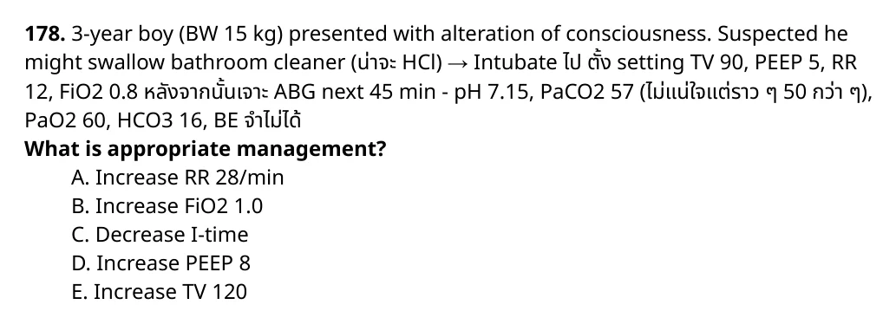
crop
ถูกต้อง
Ventilated child with severe acidemia and elevated pCO2 needs increased minute ventilation; raising RR is the most direct listed adjustment.
Source: Test for Thermal and Chemical Injuries.pdf | Page/slot: - Marker: Q3 | Marker: Q3
Reference: Source: Test for Thermal and Chemical Injuries.pdf | Page/slot: - Marker: Q3 | Marker: Q3
ซ่อนเฉลยเปิดเฉลยSolution readyD-0125 answer
Answer
E. HCO3
Rationale
Uranium internal contamination is managed with urine alkalinization using bicarbonate among these choices.
D-0126D-Q0126solution_ready
ผู้ป่วย หนัก 50 kg pneumonia resp fail on ventilator PCV mode IP 17 RR 14 Fio2 0.5 Ti 1 sec PEEP 5 monitor TV 400 MV 7.2 เจาะ ABG pH 7.2 PCO2 35 PO2 100กว่าๆ Sat 95% HCO3 12 ให้ปรับ ventilator
crop
ยังไม่ถูก
A. เพิ่ม IP
ถูกต้อง
The ABG shows metabolic acidosis with inadequate respiratory compensation: expected PCO2 is about 26 mmHg, but measured PCO2 is 35. Increasing minute ventilation by raising RR helps lower PaCO2.
The ABG shows metabolic acidosis with inadequate respiratory compensation: expected PCO2 is about 26 mmHg, but measured PCO2 is 35. Increasing minute ventilation by raising RR helps lower PaCO2.
A boy 5 years old palpitation light-headache after exercise 15 min V/S : BP 80/60 mmHg , RR 28 bpm , HR 220 bpm , BP 37 C EKG : Regular narrow retrograde P wave What is the most sedative drug before cardioversion A Ketamine B Etomidate C Fentanyl D Midazolam E Propofol and Fentanyl
To lower PaCO2 from 50 to about 40, minute ventilation must increase by roughly 25%. Increasing tidal volume from 500 to 600 mL is the closest listed adjustment.
To lower PaCO2 from 50 to about 40, minute ventilation must increase by roughly 25%. Increasing tidal volume from 500 to 600 mL is the closest listed adjustment.
36 มี ICH on ett E1M1VT CBC normal Na 130 k4 cl101 hco3 21 Serum osmo 320 Bs 98 cr 1.2 bun 20 ถามว่าความประเมินอะไรต่อ(ไม่ได้บอกว่าให้ประเมินอะไร คิดว่าคง hypona) A TG level B volume assess C urine na D urine osmo E mannitol use
Duplicate of B-0015: Na 130 with serum osmolality 320 in an ICH patient suggests hypertonic hyponatremia from mannitol, so mannitol use should be assessed.
Epsilon wave after VT is classically associated with arrhythmogenic right ventricular dysplasia/cardiomyopathy.
D-0136D-Q0136solution_ready
ช 30 EMS ออกรับ unconscious 1 ชม เจอของเหลวในขวด กลิ่น alcohol v/s BT 37 PR 120 BP 80/50 spo2 95 E1V2M4 PE normal all LAB : CBC wnl BS 100 BUN 50 Cr 0.5 Na 134 K 3.4 Cl 101 HCO2 21 Ca 2.0 ketone 10 serumOsm 320
crop
ยังไม่ถูก
A. MetOH
ถูกต้อง
Isopropanol poisoning causes CNS depression with elevated osmolar gap and ketosis without the severe anion-gap acidosis typical of methanol or ethylene glycol.
Isopropanol poisoning causes CNS depression with elevated osmolar gap and ketosis without the severe anion-gap acidosis typical of methanol or ethylene glycol.
D-0137D-Q0137solution_ready
25. ช 74 ปี chest pain 1h, ems ออกรับ ให้ MO หายเจ็บอก มีประวัติ Rt cardioembolic stroke 3 ปี ยังมีซ้าย weak เล็กน้อย ให้ EKG: STE I, aVL, V2-6, STD II, III, aVF, ถาม mx
crop
ยังไม่ถูก
A. Indomethacin
ยังไม่ถูก
B. Echo
ยังไม่ถูก
C. Pericardiocentesis
ยังไม่ถูก
D. Thrombolytic agent
ถูกต้อง
STEMI with contraindication/poor fit for thrombolysis should go for urgent coronary angiography/PCI when feasible.
STEMI with contraindication/poor fit for thrombolysis should go for urgent coronary angiography/PCI when feasible.
D-0138D-Q0138solution_ready
124. EMS พบชายกินยาไม่ทราบชนิด นอนหมดสติ ซักประวัติญาติไม่ได้ E2V1M4 ใส่ทิ้วแล้ว lab Na 148 K 5.8 Cl 125 HCO 14 Serum Osm 305 ABG: pH 7.21, pO2 95, HCO 14 Lac 2.1
crop
ยังไม่ถูก
A. Methanol toxicity
ยังไม่ถูก
B. Addisonian crisis
ยังไม่ถูก
C. Cyanide toxicity
ยังไม่ถูก
D. Ethanol toxicity
ถูกต้อง
Salicylate poisoning can produce significant metabolic acidosis in an unknown ingestion; cyanide would usually have marked lactic acidosis, and alcohols/addison do not fit the full pattern as well.
Salicylate poisoning can produce significant metabolic acidosis in an unknown ingestion; cyanide would usually have marked lactic acidosis, and alcohols/addison do not fit the full pattern as well.
STEMI complicated by PEA arrest and pericardial effusion points to ventricular free-wall rupture causing tamponade.
D-0140D-Q0140solution_ready
Q10. A 50-year-old woman with ethanol abuse presents with confusion after not eating much for the past few days. Vitals: HR 102, BP 149/82, RR 24. She is disheveled and moderately confused. Exam shows no hyperreflexia or clonus. Labs include glucose 263 mg/dL, anion gap 22, and serum ketones. The poison center recommends which therapy?
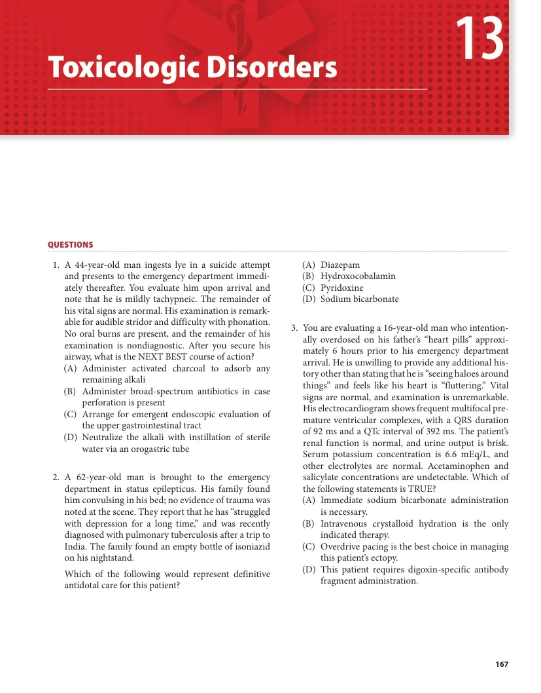
McGraw Chapter 13, source page image p.178
Source: Old special HTML: A04 | Page/slot: old-special | Marker: a04-glucose-diabetes-and-dka-q10
Reference: Source: Old special HTML: A04 | Page/slot: old-special | Marker: a04-glucose-diabetes-and-dka-q10
ซ่อนเฉลยเปิดเฉลยSolution readyD-0140 answer
Answer
Answer not imported.
Rationale
Rationale not imported.
References
- Source note: Extra A04 alcohol/metabolic source item routed from McGraw Chapter 13 page 178. - Original reference: Reference: Source: McGraw Chapter 13: Toxicologic Disorders | p.178
Source: Old special HTML: A04 | Page/slot: old-special | Marker: a04-glucose-diabetes-and-dka-q3
Reference: Source: Old special HTML: A04 | Page/slot: old-special | Marker: a04-glucose-diabetes-and-dka-q3
ซ่อนเฉลยเปิดเฉลยSolution readyD-0143 answer
Answer
Answer not imported.
Rationale
Rationale not imported.
References
- Source note: Source file: รวมข้อสอบ-board-2562-CHULA.pdf | Targeted repair from page 28. Generic extraction dropped the DTX/ketone/ABG data and all options. - Original reference: Reference: Source: รวมข้อสอบ-board-2562-CHULA.pdf | p.28
D-0144D-Q0144solution_ready
Q6. A 45-year-old man with a history of chronic alcohol use presents with nausea, vomiting, and abdominal pain. He appears tachycardic, tachypneic, and mildly confused. Laboratory results show pH 7.28, HCO3 12 mEq/L, anion gap 22, glucose 92 mg/dL, and positive serum ketones. Which of the following is the first-line treatment for this condition?
Source: Old special HTML: A04 | Page/slot: old-special | Marker: a04-glucose-diabetes-and-dka-q6
Reference: Source: Old special HTML: A04 | Page/slot: old-special | Marker: a04-glucose-diabetes-and-dka-q6
ซ่อนเฉลยเปิดเฉลยSolution readyD-0144 answer
Answer
Answer not imported.
Rationale
Rationale not imported.
References
- Source note: Extra A04 metabolic source item routed from Intraining page 10. - Original reference: Reference: Source: Intraining exam 100 ??? 12 Jan 2026 | p.10
D-0145D-Q0145solution_ready
Q7. A 12-year-old girl is brought to the emergency department for confusion and rapid breathing after increased urination, abdominal pain, fatigue, and progressive somnolence. Vitals show pulse 138/min and respirations 36/min. She is ill-appearing with tachypnea, subcostal retractions, dry mucous membranes, and diffuse abdominal tenderness. Labs: Na 129, K 4.8, Cl 98, HCO3 9, BUN 24, Cr 1.2, glucose 450 mg/dL. Which of the following is most likely decreased in this patient?
MCQ 2563 by EP15 Rajavithi.pdf, source page image p.1
Source: Old special HTML: A04 | Page/slot: old-special | Marker: a04-glucose-diabetes-and-dka-q8
Reference: Source: Old special HTML: A04 | Page/slot: old-special | Marker: a04-glucose-diabetes-and-dka-q8
ซ่อนเฉลยเปิดเฉลยSolution readyD-0146 answer
Answer
Answer not imported.
Rationale
Rationale not imported.
References
- Source note: Extra A04 alcohol/metabolic source item routed from EP15 page 1. - Original reference: Reference: Source: MCQ 2563 by EP15 Rajavithi.pdf | p.1
D-0147D-Q0147solution_ready
Q9. Male 38 yrs, underlying chronic alcohol drinking and DM on metformin 2x2, presents with dyspnea after heavy alcohol drinking for 2 days. At ER: good consciousness, tachypnea, no other remarkable PE. Lab: BS 150, ABG pH 7.25, PCO2 25, PO2 130, HCO3 10, beta-OH 12, urine ketone negative. Diagnosis?
Test_for_AKA.pdf, source page image p.1
Source: Old special HTML: A04 | Page/slot: old-special | Marker: a04-glucose-diabetes-and-dka-q9
Reference: Source: Old special HTML: A04 | Page/slot: old-special | Marker: a04-glucose-diabetes-and-dka-q9
ซ่อนเฉลยเปิดเฉลยSolution readyD-0147 answer
Answer
Answer not imported.
Rationale
Rationale not imported.
References
- Source note: Extra A04 metabolic acidosis source item routed from Test_for_AKA page 1. - Original reference: Reference: Source: Test_for_AKA.pdf | p.1
Source: Old special HTML: A04 | Page/slot: old-special | Marker: a04-glucose-diabetes-dka-q4
Reference: Source: Old special HTML: A04 | Page/slot: old-special | Marker: a04-glucose-diabetes-dka-q4
ซ่อนเฉลยเปิดเฉลยSolution readyD-0148 answer
Answer
Answer not imported.
Rationale
Rationale not imported.
References
- Source note: Extra A04 DKA source item recovered from DKA test.pdf page 3; answers intentionally omitted. - Original reference: Reference: Source: DKA test.pdf | p.3
D-0149D-Q0149solution_ready
Q5. A 54-year-old woman with diabetes mellitus presents with confusion and seizure. Glucose 950, BUN 40, Na 119, K 5, HCO3 about 19-20, pH 7.35, dry lips/tongue, no focal neurologic signs. What is the next appropriate management?
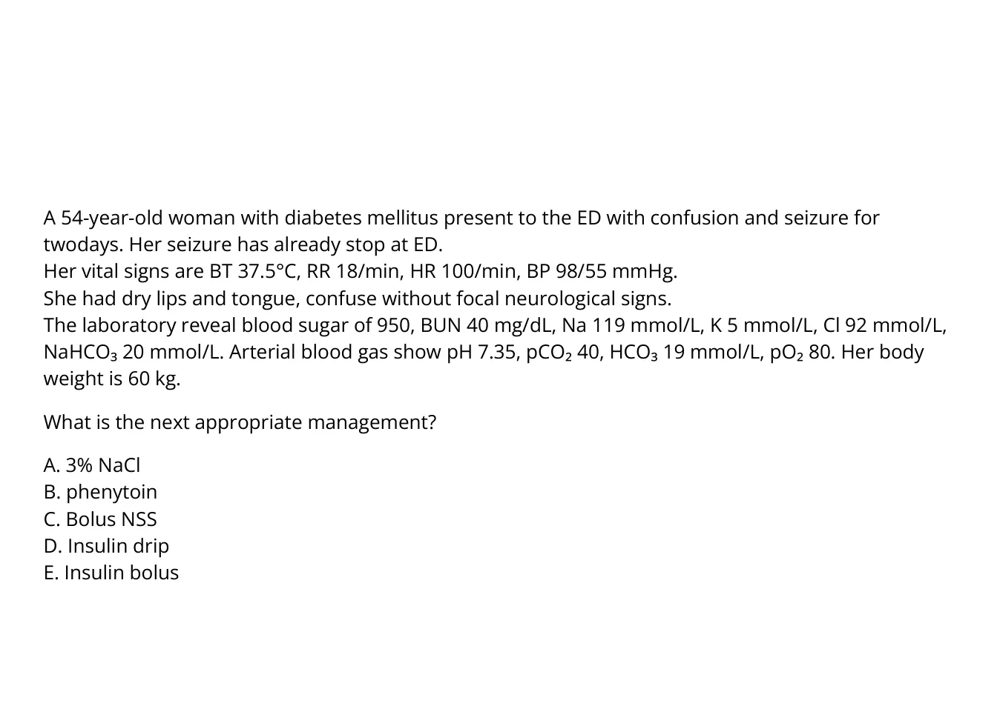
Endopdf.pdf, source page image p.110
Source: Old special HTML: A04 | Page/slot: old-special | Marker: a04-glucose-diabetes-dka-q5
Reference: Source: Old special HTML: A04 | Page/slot: old-special | Marker: a04-glucose-diabetes-dka-q5
ซ่อนเฉลยเปิดเฉลยSolution readyD-0149 answer
Answer
Answer not imported.
Rationale
Rationale not imported.
References
- Source note: Extra A04 source item recovered from Endopdf.pdf page 110; answers intentionally omitted. - Original reference: Reference: Source: Endopdf.pdf | p.110
D-0150D-Q0150solution_ready
Q10. A 50-year-old woman presents to the emergency department with nausea, vomiting, and mild abdominal discomfort. She reports binge drinking for the past week and stopped suddenly due to multiple episodes of vomiting. Her lab values are positive for serum ketones and an elevated blood urea nitrogen (BUN). Serum chemistry panel is MOST LIKELY to show which of the following?
McGraw Chapter 15, source page image p.203
Source: Old special HTML: A04 | Page/slot: old-special | Marker: a04-mcgraw-board-review-q10
Reference: Source: Old special HTML: A04 | Page/slot: old-special | Marker: a04-mcgraw-board-review-q10
ซ่อนเฉลยเปิดเฉลยSolution readyD-0150 answer
Answer
Answer not imported.
Rationale
Rationale not imported.
References
- Source note: Source file: McGraw Chapter 15: Endocrine, Metabolic, and Nutritional Disorders - Original reference: Reference: Source: McGraw Chapter 15: Endocrine, Metabolic, and Nutritional Disorders | p.202-205
D-0151D-Q0151solution_ready
Q11. A 25-year-old man presents to the emergency department 3 days after an episode of binge drinking. Over the past 2 days, he has had decreased oral intake due to persistent nausea and vomiting. Vital signs are BP 98/56, HR 105, SpO2 100% RA, and RR 18. Serum lab values show glucose of 80 mg/dL, a wide anion gap metabolic acidosis, and positive serum ketones. In addition to administration of normal saline, what other treatment should be initiated?
McGraw Chapter 15, source page image p.203
Source: Old special HTML: A04 | Page/slot: old-special | Marker: a04-mcgraw-board-review-q11
Reference: Source: Old special HTML: A04 | Page/slot: old-special | Marker: a04-mcgraw-board-review-q11
ซ่อนเฉลยเปิดเฉลยSolution readyD-0151 answer
Answer
Answer not imported.
Rationale
Rationale not imported.
References
- Source note: Source file: McGraw Chapter 15: Endocrine, Metabolic, and Nutritional Disorders - Original reference: Reference: Source: McGraw Chapter 15: Endocrine, Metabolic, and Nutritional Disorders | p.202-205
D-0152D-Q0152solution_ready
Q12. A 53-year-old woman with type 2 diabetes mellitus presents to the emergency department due to persistently high readings on her glucometer. She reports that her blood glucose values are generally well controlled with her usual medication regimen but she started taking a new medication for her blood pressure last month. Her lab values are glucose 650 mg/dL, plasma osmolality of 330 mOsm/kg, serum ketones negative, and arterial pH 7.40. You are concerned for hyperosmolar hyperglycemic state (HHS). Which of the following medications is MOST LIKELY to have predisposed this patient to develop HHS?
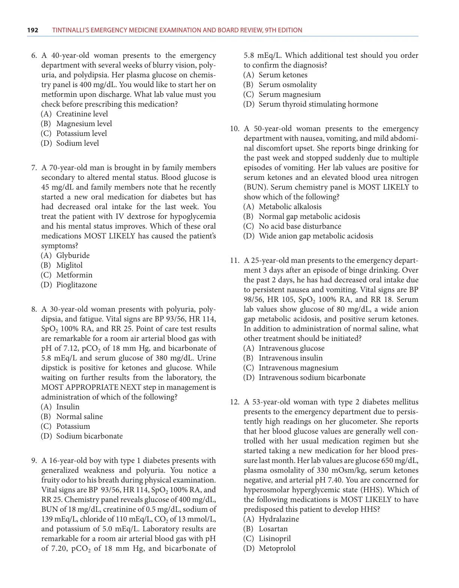
McGraw Chapter 15, source page image p.203
Source: Old special HTML: A04 | Page/slot: old-special | Marker: a04-mcgraw-board-review-q12
Reference: Source: Old special HTML: A04 | Page/slot: old-special | Marker: a04-mcgraw-board-review-q12
ซ่อนเฉลยเปิดเฉลยSolution readyD-0152 answer
Answer
Answer not imported.
Rationale
Rationale not imported.
References
- Source note: Source file: McGraw Chapter 15: Endocrine, Metabolic, and Nutritional Disorders - Original reference: Reference: Source: McGraw Chapter 15: Endocrine, Metabolic, and Nutritional Disorders | p.202-205
D-0153D-Q0153solution_ready
Q4. A 5-year-old boy with type 1 diabetes mellitus presents to the emergency department due to altered mental status. His diabetes is treated with an insulin pump. Vital signs are T 37.2°C, BP 112/72, HR 95, RR 14, and SpO2 100% RA. Point-of-care glucose is 300 mg/dL. Arterial blood gas shows a pH of 7.12. Glucose and ketones are present in his urine dipstick. The patient has an anion gap of 16. What is the APPROPRIATE INITIAL STEP in the management for this patient?
McGraw Chapter 15, source page image p.202
Source: Old special HTML: A04 | Page/slot: old-special | Marker: a04-mcgraw-board-review-q4
Reference: Source: Old special HTML: A04 | Page/slot: old-special | Marker: a04-mcgraw-board-review-q4
ซ่อนเฉลยเปิดเฉลยSolution readyD-0153 answer
Answer
Answer not imported.
Rationale
Rationale not imported.
References
- Source note: Source file: McGraw Chapter 15: Endocrine, Metabolic, and Nutritional Disorders - Original reference: Reference: Source: McGraw Chapter 15: Endocrine, Metabolic, and Nutritional Disorders | p.202-205
D-0154D-Q0154solution_ready
Q5. A 45-year-old woman with no known medical problems presents to the emergency department with symptoms of blurry vision, polyuria, and polydipsia. Her plasma glucose level is 205 mg/dL. What is the MOST LIKELY underlying cause of this patient’s condition?
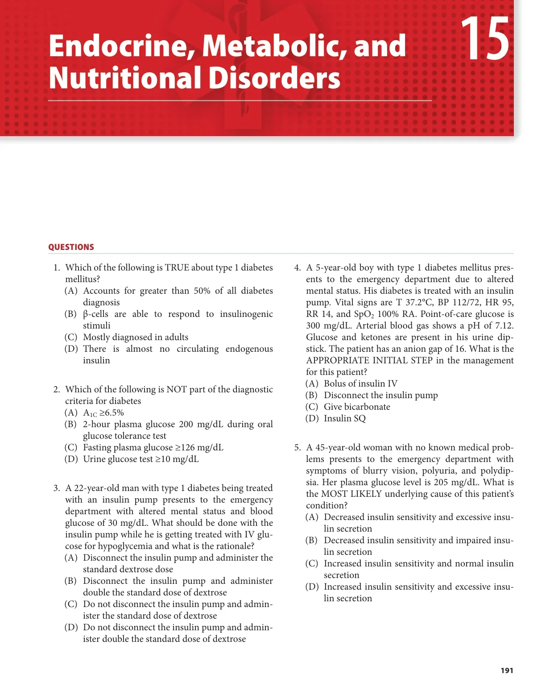
McGraw Chapter 15, source page image p.202
Source: Old special HTML: A04 | Page/slot: old-special | Marker: a04-mcgraw-board-review-q5
Reference: Source: Old special HTML: A04 | Page/slot: old-special | Marker: a04-mcgraw-board-review-q5
ซ่อนเฉลยเปิดเฉลยSolution readyD-0154 answer
Answer
Answer not imported.
Rationale
Rationale not imported.
References
- Source note: Source file: McGraw Chapter 15: Endocrine, Metabolic, and Nutritional Disorders - Original reference: Reference: Source: McGraw Chapter 15: Endocrine, Metabolic, and Nutritional Disorders | p.202-205
D-0155D-Q0155solution_ready
Q8. A 30-year-old woman presents with polyuria, polydipsia, and fatigue. Vital signs are BP 93/56, HR 114, SpO2 100% RA, and RR 25. Point of care test results are remarkable for a room air arterial blood gas with pH of 7.12, pCO2 of 18 mm Hg, and bicarbonate of 5.8 mEq/L and serum glucose of 380 mg/dL. Urine dipstick is positive for ketones and glucose. While waiting on further results from the laboratory, the MOST APPROPRIATE NEXT step in management is administration of which of the following?
McGraw Chapter 15, source page image p.203
Source: Old special HTML: A04 | Page/slot: old-special | Marker: a04-mcgraw-board-review-q8
Reference: Source: Old special HTML: A04 | Page/slot: old-special | Marker: a04-mcgraw-board-review-q8
ซ่อนเฉลยเปิดเฉลยSolution readyD-0155 answer
Answer
Answer not imported.
Rationale
Rationale not imported.
References
- Source note: Source file: McGraw Chapter 15: Endocrine, Metabolic, and Nutritional Disorders - Original reference: Reference: Source: McGraw Chapter 15: Endocrine, Metabolic, and Nutritional Disorders | p.202-205
D-0156D-Q0156solution_ready
Q9. A 16-year-old boy with type 1 diabetes presents with generalized weakness and polyuria. You notice a fruity odor to his breath during physical examination. Vital signs are BP 93/56, HR 114, SpO2 100% RA, and RR 25. Chemistry panel reveals glucose of 400 mg/dL, BUN of 18 mg/dL, creatinine of 0.5 mg/dL, sodium of 139 mEq/L, chloride of 110 mEq/L, CO2 of 13 mmol/L, and potassium of 5.0 mEq/L. Laboratory results are remarkable for a room air arterial blood gas with pH of 7.20, pCO2 of 18 mm Hg, and bicarbonate of 5.8 mEq/L. Which additional test should you order to confirm the diagnosis?
McGraw Chapter 15, source page image p.203
Source: Old special HTML: A04 | Page/slot: old-special | Marker: a04-mcgraw-board-review-q9
Reference: Source: Old special HTML: A04 | Page/slot: old-special | Marker: a04-mcgraw-board-review-q9
ซ่อนเฉลยเปิดเฉลยSolution readyD-0156 answer
Answer
Answer not imported.
Rationale
Rationale not imported.
References
- Source note: Source file: McGraw Chapter 15: Endocrine, Metabolic, and Nutritional Disorders - Original reference: Reference: Source: McGraw Chapter 15: Endocrine, Metabolic, and Nutritional Disorders | p.202-205
Q1. A 15-year-old girl presents to the emergency department with her parents for generalized weakness and weight loss. She has a history of bulimia and admits to routinely purging after she eats. Which of the following abnormalities would you most expect to find on her electrocardiogram?
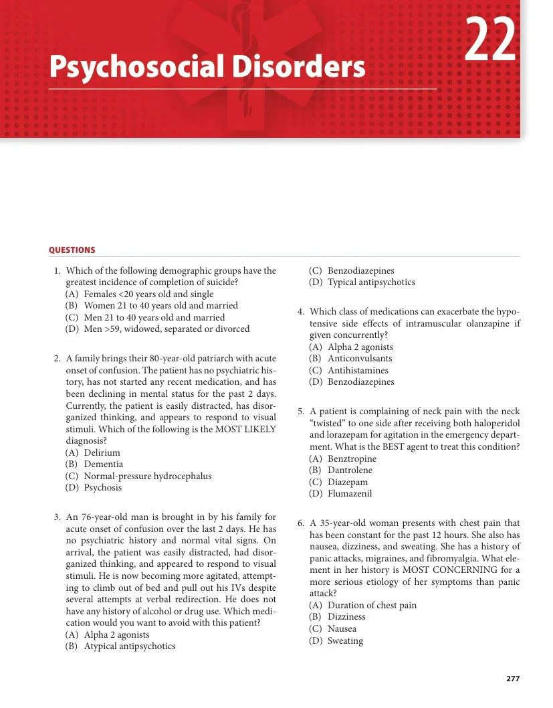
McGraw Chapter 22, source page image p.288
Source: Old special HTML: A04 | Page/slot: old-special | Marker: a04-nutrition-vitamins-metabolic-q1
Reference: Source: Old special HTML: A04 | Page/slot: old-special | Marker: a04-nutrition-vitamins-metabolic-q1
ซ่อนเฉลยเปิดเฉลยSolution readyD-0159 answer
Answer
Answer not imported.
Rationale
Rationale not imported.
References
- Source note: Extra A04 nutrition/electrolyte source item routed from McGraw Chapter 22 page 288. - Original reference: Reference: Source: McGraw Chapter 22: Psychosocial Disorders | p.288
D-0160D-Q0160solution_ready
Q1. ??????????? ????????????? 4 ??? ??????????????? proximal muscle weakness. Lab: Na 140, K 2.8, Cl 101, HCO3 16, urine K 8. ??? Dx?
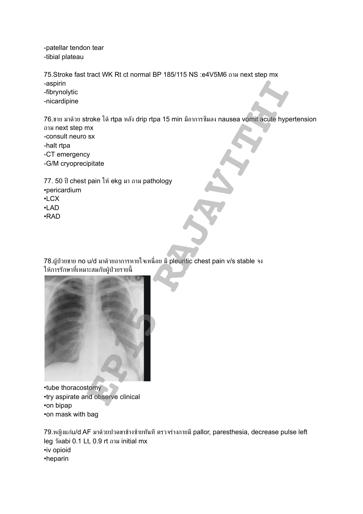
MCQ 2563 by EP15 Rajavithi.pdf, source page image p.1
Source: Old special HTML: A04 | Page/slot: old-special | Marker: a04-potassium-ecg-electrolytes-q1
Reference: Source: Old special HTML: A04 | Page/slot: old-special | Marker: a04-potassium-ecg-electrolytes-q1
ซ่อนเฉลยเปิดเฉลยSolution readyD-0160 answer
Answer
Answer not imported.
Rationale
Rationale not imported.
References
- Source note: Extra A04 electrolyte source item routed from EP15 page 1. - Original reference: Reference: Source: MCQ 2563 by EP15 Rajavithi.pdf | p.1
D-0161D-Q0161solution_ready
Q3. Ped 5 months poor oral intake, abdomen: no distension, BP 85/60. Lab: hypokalemia, hyponatremia, hypochloremia, HCO3 30. Diagnosis?
Source: Old special HTML: A04 | Page/slot: old-special | Marker: a04-potassium-ecg-electrolytes-q3
Reference: Source: Old special HTML: A04 | Page/slot: old-special | Marker: a04-potassium-ecg-electrolytes-q3
ซ่อนเฉลยเปิดเฉลยSolution readyD-0161 answer
Answer
Answer not imported.
Rationale
Rationale not imported.
References
- Source note: Extra A04 electrolyte/adrenal source item recovered from MCQ 2025 source page p.42; answers intentionally omitted. - Original reference: Reference: Source: MCQ 2025 ???????????????.pdf | p.42 | Q55
D-0162D-Q0162solution_ready
Q2. ชาย 40 ปี มาด้วยซึม GCS 7. Lab: Na 112, urine osmolality 30, urine sodium 7, serum osmolality 265. Which of the following is the most likely diagnosis?
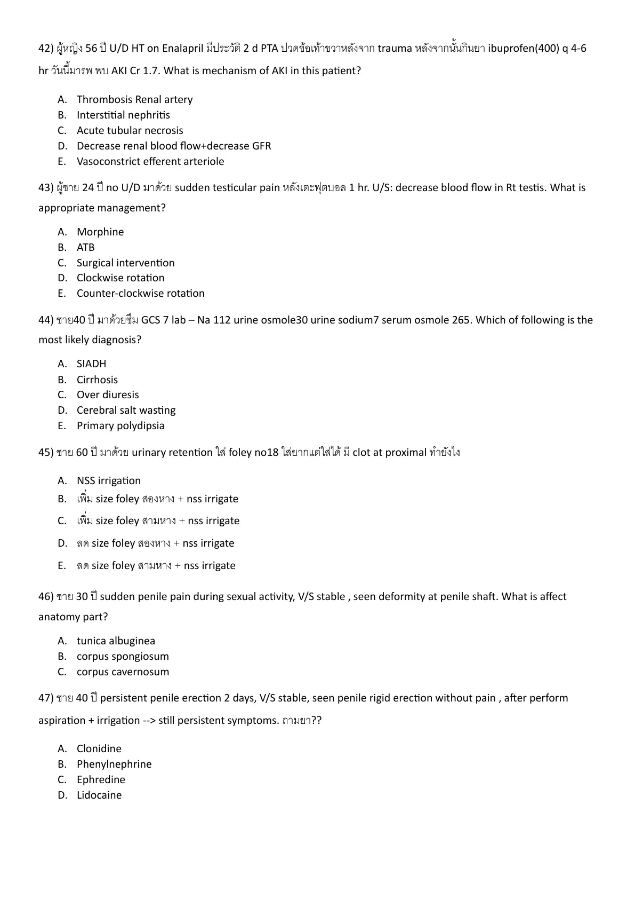
MCQ 2566 combined.pdf, source page image p.9
Source: Old special HTML: A04 | Page/slot: old-special | Marker: a04-sodium-water-and-osmolality-q2
Reference: Source: Old special HTML: A04 | Page/slot: old-special | Marker: a04-sodium-water-and-osmolality-q2
Source: Old special HTML: A04 | Page/slot: old-special | Marker: a04-sodium-water-and-osmolality-q4
Reference: Source: Old special HTML: A04 | Page/slot: old-special | Marker: a04-sodium-water-and-osmolality-q4
ซ่อนเฉลยเปิดเฉลยSolution readyD-0164 answer
Answer
Answer not imported.
Rationale
Rationale not imported.
References
- Source note: Source-limited item: original page lists the stem only; answer choices were not present in the extracted source. - Original reference: Reference: Source: รวมข้อสอบ-board-2562-CHULA.pdf | p.27
D-0165D-Q0165solution_ready
Q5. คนไข้ชาย 45 ปี มาด้วยอ่อนเพลีย. BP 110/80. Lab: Na 135, K 3.0, HCO3 30. เกิดจากอะไร?
Q7. ???? 72 ?? ?????? AOC. BT 37?C, P 100, BP 100/60, E3V4M5, DTR 2+. Lab: Na 160, K 5, Cl 105, HCO3 28. ??? free water deficit; ???????????? body weight ???????? ideal Na ???.
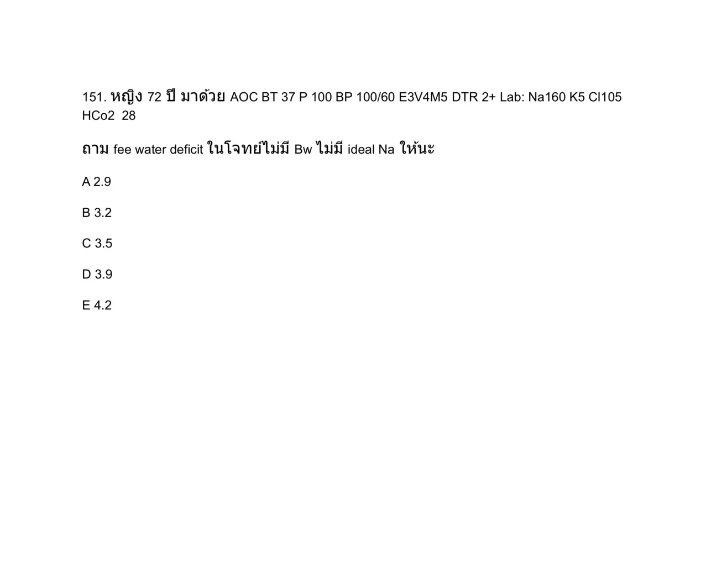
Test elyte imbalance-1.pdf, source page image p.1
Source: Old special HTML: A04 | Page/slot: old-special | Marker: a04-sodium-water-and-osmolality-q7
Reference: Source: Old special HTML: A04 | Page/slot: old-special | Marker: a04-sodium-water-and-osmolality-q7
ซ่อนเฉลยเปิดเฉลยSolution readyD-0166 answer
Answer
Answer not imported.
Rationale
Rationale not imported.
References
- Source note: Extra A04 sodium/free-water source item recovered from source-failure PDF page 1. - Original reference: Reference: Source: Test elyte imbalance-1.pdf | p.1
D-0167D-Q0167solution_ready
Q2. 36 ?? ICH on ETT E1M1VT, CBC normal, Na 130, K 4, Cl 101, HCO3 21, serum osmolality 320, BS 98, Cr 1.2, BUN 20. ???????????????????????? (?????????????? ???????? hyponatremia)
MCQ 2024 source page p.17, question 136
Source: Old special HTML: A04 | Page/slot: old-special | Marker: a04-sodium-water-osmolality-q2
Reference: Source: Old special HTML: A04 | Page/slot: old-special | Marker: a04-sodium-water-osmolality-q2
Source: Old special HTML: A04 | Page/slot: old-special | Marker: a04-thyroid-and-adrenal-q19
Reference: Source: Old special HTML: A04 | Page/slot: old-special | Marker: a04-thyroid-and-adrenal-q19
ซ่อนเฉลยเปิดเฉลยSolution readyD-0169 answer
Answer
Answer not imported.
Rationale
Rationale not imported.
References
- Source note: Extra A04 adrenal source item recovered from MCQ 2025 source page p.26; answers intentionally omitted. - Original reference: Reference: Source: MCQ 2025 ???????????????.pdf | p.26 | Q33
D-0170D-Q0170solution_ready
Q24. A 45-year-old female was found unconscious and brought to the ED. Physical examination revealed BT 35.5 C, BP 71/48 mmHg, HR 59/min, RR 18/min, face and extremities edematous and non-pitting edema, dry cool slightly mottled and desquamated skin, sluggish eyes, decerebrate gestures, Babinski sign, DTX 104 mg%, ECG sinus bradycardia. CT brain normal. Which investigation is most useful further investigation?
ข้อสอบ Hypothyroid.pdf, source page image p.3
Source: Old special HTML: A04 | Page/slot: old-special | Marker: a04-thyroid-and-adrenal-q24
Reference: Source: Old special HTML: A04 | Page/slot: old-special | Marker: a04-thyroid-and-adrenal-q24
ซ่อนเฉลยเปิดเฉลยSolution readyD-0170 answer
Answer
Answer not imported.
Rationale
Rationale not imported.
References
- Source note: Extra A04 hypothyroid/myxedema source item recovered from ข้อสอบ Hypothyroid.pdf page 3; answers intentionally omitted. - Original reference: Reference: Source: ข้อสอบ Hypothyroid.pdf | p.3
D-0171D-Q0171solution_ready
Q30. 45-year-old has 4 months of nonfocal generalized headache, BP 170/120, lab K 2.3, HCO3 elevated. Plasma renin activity is low and serum aldosterone is high. Which cause is most likely?
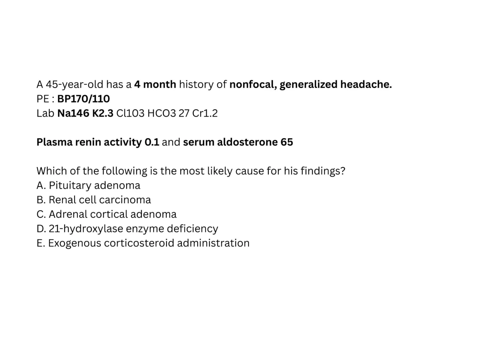
Endopdf.pdf, source page image p.90
Source: Old special HTML: A04 | Page/slot: old-special | Marker: a04-thyroid-and-adrenal-q30
Reference: Source: Old special HTML: A04 | Page/slot: old-special | Marker: a04-thyroid-and-adrenal-q30
ซ่อนเฉลยเปิดเฉลยSolution readyD-0171 answer
Answer
Answer not imported.
Rationale
Rationale not imported.
References
- Source note: Extra A04 source item recovered from Endopdf.pdf page 90; answers intentionally omitted. - Original reference: Reference: Source: Endopdf.pdf | p.90
Q11. An ambulance brings in an unresponsive young patient who was “found down” in his apartment by his roommate after a night of binge drinking. His serum creatine kinase level returns at nearly 12,000 IU/L. CT of the brain shows no acute findings. ECG reveals normal sinus rhythm. Which of the following evidence-based treatments should the patient defi nitely receive?
ถูกต้อง
A. Aggressive hydration with isotonic saline solution IV
ยังไม่ถูก
B. Alkalinization of the urine with an infusion of isotonic saline solution with sodium bicarbonate at 100 mL/h, titrate for pH >7.0
ยังไม่ถูก
C. Diuresis with a loop diuretic such as furosemide 40 mg IV
ยังไม่ถูก
D. Mannitol and Ringer’s lactate infusion IV
Source: Old special HTML: A14 | Page/slot: old-special | Marker: a14-mcgraw-ch08-renal-and-genitourinary-q11
Reference: Source: Old special HTML: A14 | Page/slot: old-special | Marker: a14-mcgraw-ch08-renal-and-genitourinary-q11
ซ่อนเฉลยเปิดเฉลยSolution readyD-0174 answer
Answer
A
Rationale
Rationale not imported.
References
- Source note: Source file: McGraw Chapter 8: Renal and Genitourinary Disorders - Original reference: Reference: Source: McGraw Chapter 8: Renal and Genitourinary Disorders | p.102-105; answer section p.107
D-0175D-Q0175solution_ready
Q2. Ped 5 m poor oral intake, abdomen not distended, BP 85/60. Lab: hypoK, hypoNa, hypoCl, HCO3 30. Dx?
ยังไม่ถูก
A. Bartter syndrome
ยังไม่ถูก
B. Gitelman syndrome
ยังไม่ถูก
C. Primary hyperaldosteronism
ยังไม่ถูก
D. Congenital adrenal hyperplasia
ถูกต้อง
E. Pyloric stenosis
Source: Old special HTML: A14 | Page/slot: old-special | Marker: a14-pediatric-renal-and-urogenital-q2
Reference: Source: Old special HTML: A14 | Page/slot: old-special | Marker: a14-pediatric-renal-and-urogenital-q2
Q1. A 58-year-old woman with chronic kidney disease (CKD) arrives at the emergency department with massive hematemesis. She is hypotensive and tachycardic, leading to the activation of the massive transfusion protocol, receiving 6 units of packed red blood cells (pRBCs) and 4 units of fresh frozen plasma (FFP). Following this, she experiences carpopedal spasm and a tonic-clonic seizure. Her vitals post-seizure are: blood pressure 90/55 mmHg, heart rate 115 bpm, respiratory rate 22/min, and SpO₂ 98% on room air. An ECG shows a prolonged QT interval. Initial arterial blood gas results reveal: pH 7.30, pCO₂ 32 mmHg, HCO₃⁻ 15 mEq/L, and lactate 4.2 mmol/L. After IV calcium gluconate is administered, her symptoms persist, and a repeat ECG still shows a prolonged QT interval. What is the most appropriate next step in management?
Q14. ESRD with DM and volume overload presents with bilateral lung crepitation. ECG shows tall peaked T waves and a wide QRS complex. What is the most appropriate management?
Q15. 55-year-old patient with CKD stage 5 not yet on renal replacement therapy presents with PND for 1 week. Exam notes bilateral crepitation. ABG: pH 7.31, PCO2 6.9, PaO2 102, HCO3 4.
Renal transplant graft reference image.
ถูกต้อง
A. Emergency hemodialysis
Source: Old special HTML: A14 | Page/slot: old-special | Marker: a14-renal-aki-dialysis-and-electrolyte-q15
Reference: Source: Old special HTML: A14 | Page/slot: old-special | Marker: a14-renal-aki-dialysis-and-electrolyte-q15
ซ่อนเฉลยเปิดเฉลยSolution readyD-0179 answer
Answer
A
Rationale
Rationale not imported.
References
- Source note: Source page p.10 shows the stem fragment clearly, but no reliable answer choices were recoverable for this item in the current source block. Source file: MCQ-202024.pdf.pdf | Source stem fragment only; added single recovered keyed management option. - Original reference: Reference: Source: MCQ-202024.pdf.pdf | p.10. Textbook: Tintinalli Ch.88 Acute Kidney Injury p.569; Table 88-7 p.569. ESRD fluid overload context: Tintinalli Ch.90 p.574.
D-0180D-Q0180solution_ready
Q16. หญิง 60 ปี เคยมี diarrhea ได้รับ Bactrim oral มา few weeks วันนี้มาด้วย lethargy, BT 37.5, PR 110, BP 90/40. Lab: BUN 20, Cr 1.4, Na 131, K 4, HCO3 20. UA: RBC 3-5 and WBC casts 5-10. What is the most likely diagnosis?
Source: Old special HTML: A14 | Page/slot: old-special | Marker: a14-renal-aki-dialysis-and-electrolyte-q16
Reference: Source: Old special HTML: A14 | Page/slot: old-special | Marker: a14-renal-aki-dialysis-and-electrolyte-q16
ซ่อนเฉลยเปิดเฉลยSolution readyD-0180 answer
Answer
E
Rationale
Rationale not imported.
References
- Source note: Source file: Gi kub uro.pdf - Original reference: Reference: Source: Gi kub uro.pdf | p.21-22. Teaching copied from A14 Old Exam Source 2024 Q190-BactrimAIN. Textbook: Tintinalli Ch.88 Acute Kidney Injury p.563-567; Table 88-4 p.566; Table 88-6 p.567.
D-0181D-Q0181solution_ready
Q18. ชาย 70 ปี มี BPH มาด้วย nausea and vomiting 1 day, no pitting edema. Lab: Na 145, BUN 25, Cr 2.8, urine Na 45, urine Cr 10, urine osmolality 345. What is the most likely cause of AKI?
Q4. A 58-year-old male presents to the Emergency Department (ED) with chest discomfort for the past 3 hours. He complains of orthopnea and shortness of breath. He has a history of hypertension and end-stage renal disease. His vital signs are BP 100/60 mmHg, RR 24/min, T 37 c, P 115 bpm His ECG shows below. What is the definitive management for this patient?
Intraining 2569 Q85 source image
ยังไม่ถูก
A. Administer dual antiplatelet therapy (aspirin and clopidogrel) and start a heparin infusion, then perform urgent coronary angiography.
ยังไม่ถูก
B. Administer calcium gluconate, insulin plus glucose, sodium bicarbonate and kayexalate.
ยังไม่ถูก
C. Give sublingual nitroglycerin and morphine, then obtain serial ECGs
ยังไม่ถูก
D. Immediate percutaneous coronary intervention (PCI)
ถูกต้อง
E. Immediate hemodialysis
Source: Old special HTML: A14 | Page/slot: old-special | Marker: a14-renal-aki-dialysis-and-electrolyte-q4
Reference: Source: Old special HTML: A14 | Page/slot: old-special | Marker: a14-renal-aki-dialysis-and-electrolyte-q4
Source: Old special HTML: A16 | Page/slot: old-special | Marker: a16-alcohol-toxic-alcohol-and-aka-q11
Reference: Source: Old special HTML: A16 | Page/slot: old-special | Marker: a16-alcohol-toxic-alcohol-and-aka-q11
ซ่อนเฉลยเปิดเฉลยSolution readyD-0186 answer
Answer
Answer not imported.
Rationale
Rationale not imported.
References
- Source note: Source file: Test_for_AKA.pdf | Targeted repair from Test_for_AKA.pdf. No explicit answer key was present in the source, so the answer remains needs_review unless a separate verified key is matched. - Original reference: Reference: Source: Test_for_AKA.pdf | p.1-2
D-0187D-Q0187solution_ready
Q12. A 9-year-old footballer was found alone in a cave. He ate lunch with his teammate and was not seen for 1 hour prior to being discovered. At ER, he can give his name but is somnolent. Lab: Na 140, K 4.4, Cl 106, HCO3 22, BUN 10, Cr 0.9, Osm 35 mOsm, urine ketone positive. What causes AOC? (EMTox)
Quiz toxic alcohol.pdf, p.1
Source: Old special HTML: A16 | Page/slot: old-special | Marker: a16-alcohol-toxic-alcohol-and-aka-q12
Reference: Source: Old special HTML: A16 | Page/slot: old-special | Marker: a16-alcohol-toxic-alcohol-and-aka-q12
ซ่อนเฉลยเปิดเฉลยSolution readyD-0187 answer
Answer
Answer not imported.
Rationale
Rationale not imported.
References
- Source note: Source file: Quiz toxic alcohol.pdf | Targeted repair from Quiz toxic alcohol.pdf; source includes an explicit Answer D line. - Original reference: Reference: Source: Quiz toxic alcohol.pdf | p.1-27
D-0188D-Q0188solution_ready
Q13. A 9-year-old footballer was found alone in a cave. He ate lunch with his teammate and was not seen for 1 hour prior to being discovered. At ER, he can give his name but is somnolent. Lab: Na 140, K 4.4, Cl 106, HCO3 22, BUN 10, Cr 0.9, Osm 35 mOsm, urine ketone positive. Best treatment for this patient? (EMTox)
Quiz toxic alcohol.pdf, p.1
Source: Old special HTML: A16 | Page/slot: old-special | Marker: a16-alcohol-toxic-alcohol-and-aka-q13
Reference: Source: Old special HTML: A16 | Page/slot: old-special | Marker: a16-alcohol-toxic-alcohol-and-aka-q13
ซ่อนเฉลยเปิดเฉลยSolution readyD-0188 answer
Answer
Answer not imported.
Rationale
Rationale not imported.
References
- Source note: Source file: Quiz toxic alcohol.pdf | Targeted repair from Quiz toxic alcohol.pdf; source includes an explicit Answer D line. - Original reference: Reference: Source: Quiz toxic alcohol.pdf | p.1-27
D-0189D-Q0189solution_ready
Q16. กิน antifreeze มาถึง ER BUN 70, Na 140, K 6.5, Cl 110, HCO3 8, Glucose 180, Calcium 6.9, Serum Osm 340 นึกถึงสารอะไร และให้ประมาณค่า level ของสารในเลือด [Molecular weight ดังนี้ Ethanol 46, Isopropanol 60, Methanol 32, Ethylene glycol 62] (MCQ 2021)
Quiz toxic alcohol (1).pdf, p.6
Source: Old special HTML: A16 | Page/slot: old-special | Marker: a16-alcohol-toxic-alcohol-and-aka-q16
Reference: Source: Old special HTML: A16 | Page/slot: old-special | Marker: a16-alcohol-toxic-alcohol-and-aka-q16
ซ่อนเฉลยเปิดเฉลยSolution readyD-0189 answer
Answer
Answer not imported.
Rationale
Rationale not imported.
References
- Source note: Source image preserved from Quiz toxic alcohol (1).pdf p.6. No answer/lesson in this collection pass. - Original reference: Reference: Source: Quiz toxic alcohol (1).pdf | p.6 | full source page rendered; answer intentionally not imported.
D-0190D-Q0190solution_ready
Q2. กิน antifreeze มาถึง ER. Lab: BUN 70, Na 140, K 6.5, Cl 110, HCO3 8, glucose 180, calcium 6.9, serum osm 340. นึกถึงสารอะไร และให้ประมาณค่า level ของสารในเลือด? Molecular weights: ethanol 46, isopropanol 60, methanol 32, ethylene glycol 62.
Quiz toxic alcohol.pdf, p.1
Source: Old special HTML: A16 | Page/slot: old-special | Marker: a16-alcohol-toxic-alcohol-and-aka-q2
Reference: Source: Old special HTML: A16 | Page/slot: old-special | Marker: a16-alcohol-toxic-alcohol-and-aka-q2
ซ่อนเฉลยเปิดเฉลยSolution readyD-0190 answer
Answer
Answer not imported.
Rationale
Rationale not imported.
References
- Source note: Source file: Quiz toxic alcohol.pdf | Targeted repair from Quiz toxic alcohol.pdf; source includes an explicit Answer D line. - Original reference: Reference: Source: Quiz toxic alcohol.pdf | p.1-27
D-0191D-Q0191solution_ready
Q23. A 30-year-old man (50 kg) was found unconscious with rapid respiration lying in his bedroom with an empty bottle of paint thinner. He is brought to ER by EMS. At ER, PE: BT 37, HR 130, RR 30, BP 140/80, Lung: clear Lab: Na 137, K 4, Cl 104, HCO3 7, BUN 5, Cr 0.9, Glucose 80, Osm 300, CT brain: normal, What is the most specific Tx for this patient (EMTox) . Leucovorin 50 mg IV q 4 hr . Load ethanol 750 mg/kg then 100 mg/kg/hr via NG . Hemodialysis immediately . Folic acid 1 mg/kg q 4 hr . Fomepizole 15 mg/kg IV then 10 mg/kg q 12 hr
Quiz toxic alcohol (1).pdf, p.22
Source: Old special HTML: A16 | Page/slot: old-special | Marker: a16-alcohol-toxic-alcohol-and-aka-q23
Reference: Source: Old special HTML: A16 | Page/slot: old-special | Marker: a16-alcohol-toxic-alcohol-and-aka-q23
ซ่อนเฉลยเปิดเฉลยSolution readyD-0191 answer
Answer
Answer not imported.
Rationale
Rationale not imported.
References
- Source note: Original source image preserved from Quiz toxic alcohol (1).pdf p.22. Stem/options transcribed from the source image; answer/lesson intentionally not imported. - Original reference: Reference: Source: Quiz toxic alcohol (1).pdf | p.22 | full source page rendered; answer intentionally not imported.
D-0192D-Q0192solution_ready
Q24. A 9-year-old footballer was found alone in cave. He ate lunch with his teammate. He was not seen for 1 hour prior to being discovered in cave. At ER, He can give his name but somnolence. Lab: Na 140, K 4.4, Cl 106, HCO3 22, BUN 10, Cr 0.9, Osm 35 mOsm, urine ketone positive. What causes AOC? (EMTox) . Benzodiazepine poisoning . Opioid poisoning . AKA . Isopropranol poisoning . Diethylene glycol poisoning
Quiz toxic alcohol (1).pdf, p.24
Source: Old special HTML: A16 | Page/slot: old-special | Marker: a16-alcohol-toxic-alcohol-and-aka-q24
Reference: Source: Old special HTML: A16 | Page/slot: old-special | Marker: a16-alcohol-toxic-alcohol-and-aka-q24
ซ่อนเฉลยเปิดเฉลยSolution readyD-0192 answer
Answer
Answer not imported.
Rationale
Rationale not imported.
References
- Source note: Original source image preserved from Quiz toxic alcohol (1).pdf p.24. Stem/options transcribed from the source image; answer/lesson intentionally not imported. - Original reference: Reference: Source: Quiz toxic alcohol (1).pdf | p.24 | full source page rendered; answer intentionally not imported.
D-0193D-Q0193solution_ready
Q25. A 9-year-old footballer was found alone in cave. He ate lunch with his teammate. He was not seen for 1 hour prior to being discovered in cave. At ER, He can give his name but somnolence. Lab: Na 140, K 4.4, Cl 106, HCO3 22, BUN 10, Cr 0.9, Osm 35 mOsm, urine ketone positive. Best Tx for this patient? (EMTox) . Intubation with ventilator support . Single dose activated charcoal 50 gm . Flumazenil 0.2 mg IV . Supportive treatment . Naloxone 0.4 mg IV
Quiz toxic alcohol (1).pdf, p.26
Source: Old special HTML: A16 | Page/slot: old-special | Marker: a16-alcohol-toxic-alcohol-and-aka-q25
Reference: Source: Old special HTML: A16 | Page/slot: old-special | Marker: a16-alcohol-toxic-alcohol-and-aka-q25
ซ่อนเฉลยเปิดเฉลยSolution readyD-0193 answer
Answer
Answer not imported.
Rationale
Rationale not imported.
References
- Source note: Original source image preserved from Quiz toxic alcohol (1).pdf p.26. Stem/options transcribed from the source image; answer/lesson intentionally not imported. - Original reference: Reference: Source: Quiz toxic alcohol (1).pdf | p.26 | full source page rendered; answer intentionally not imported.
D-0194D-Q0194solution_ready
Q29. A 45-year-old man with a history of chronic alcohol use presents with nausea, vomiting, and abdominal pain. He appears tachycardic, tachypneic, and mildly confused. Laboratory results show pH: 7.28, HCO3: 12 mEq/L, Anion gap: 22, Glucose: 92 mg/dL, Serum ketones: Positive Which of the following is the first-line treatment for this condition?
Intraining exam 100 ข้อ 12 Jan 2026, p.10
Source: Old special HTML: A16 | Page/slot: old-special | Marker: a16-alcohol-toxic-alcohol-and-aka-q29
Reference: Source: Old special HTML: A16 | Page/slot: old-special | Marker: a16-alcohol-toxic-alcohol-and-aka-q29
ซ่อนเฉลยเปิดเฉลยSolution readyD-0194 answer
Answer
Answer not imported.
Rationale
Rationale not imported.
References
- Source note: Potential A16/toxicology item originally routed to A01. Full source page preserved; no answer/lesson in this pass. - Original reference: Reference: Source: Intraining exam 100 ข้อ 12 Jan 2026 | p.10 | originally routed as A01; answer intentionally not imported.
D-0195D-Q0195solution_ready
Q43. A 9-year-old footballer was found alone in cave. He ate lunch with his teammate. He was not seen for 1 hour prior to being discovered in cave. At ER, he can give his name but somnolence. Lab: Na 140, K 4.4, Cl 106, HCO3 22, BUN 10, Cr 0.9, Osm gap 35 mOsm, urine ketone positive. What causes AOC? (EMTox)
Quiz toxic alcohol.pdf, p.24
Source: Old special HTML: A16 | Page/slot: old-special | Marker: a16-alcohol-toxic-alcohol-and-aka-q43
Reference: Source: Old special HTML: A16 | Page/slot: old-special | Marker: a16-alcohol-toxic-alcohol-and-aka-q43
ซ่อนเฉลยเปิดเฉลยSolution readyD-0195 answer
Answer
Answer not imported.
Rationale
Rationale not imported.
References
- Source note: Source image preserved from Quiz toxic alcohol.pdf p.24. No answer/lesson in this collection pass. - Original reference: Reference: Source: Quiz toxic alcohol.pdf | p.24 | full source page rendered; answer intentionally not imported.
D-0196D-Q0196solution_ready
Q45. Male 38 yrs U/D: Chronic alcohol drinking, DM on MFM 2x2, dyspnea after heavy alcohol drinking for 2 day. At ER PE: good consciousness, tachypnea (no other PE), Lab: BS 150, ABG pH 7.25, PCO2 25, PO2 130, HCO3 10, b-OH 12, urine ketone negative. Diagnosis?
Test_for_AKA.pdf, p.1
Source: Old special HTML: A16 | Page/slot: old-special | Marker: a16-alcohol-toxic-alcohol-and-aka-q45
Reference: Source: Old special HTML: A16 | Page/slot: old-special | Marker: a16-alcohol-toxic-alcohol-and-aka-q45
ซ่อนเฉลยเปิดเฉลยSolution readyD-0196 answer
Answer
Answer not imported.
Rationale
Rationale not imported.
References
- Source note: Source image preserved from Test_for_AKA.pdf p.1. No answer/lesson in this collection pass. - Original reference: Reference: Source: Test_for_AKA.pdf | p.1 | full source page rendered; answer intentionally not imported.
D-0197D-Q0197solution_ready
Q5. A 30-year-old man (50 kg) was found unconscious with rapid respiration lying in his bedroom with an empty bottle of paint thinner. He is brought to ER by EMS. At ER, PE: BT 37, HR 130, RR 30, BP 140/80, lung clear. Lab: Na 137, K 4, Cl 104, HCO3 7, BUN 5, Cr 0.9, glucose 80, Osm 300, CT brain normal. What is methanol level in this patient? (EMTox)
Quiz toxic alcohol.pdf, p.1
Source: Old special HTML: A16 | Page/slot: old-special | Marker: a16-alcohol-toxic-alcohol-and-aka-q5
Reference: Source: Old special HTML: A16 | Page/slot: old-special | Marker: a16-alcohol-toxic-alcohol-and-aka-q5
ซ่อนเฉลยเปิดเฉลยSolution readyD-0197 answer
Answer
Answer not imported.
Rationale
Rationale not imported.
References
- Source note: Source file: Quiz toxic alcohol.pdf | Targeted repair from Quiz toxic alcohol.pdf; source includes an explicit Answer E line. - Original reference: Reference: Source: Quiz toxic alcohol.pdf | p.1-27
D-0198D-Q0198solution_ready
Q6. A 30-year-old man (50 kg) was found unconscious with rapid respiration lying in his bedroom with an empty bottle of paint thinner. He is brought to ER by EMS. At ER, PE: BT 37, HR 130, RR 30, BP 140/80, lung clear. Lab: Na 137, K 4, Cl 104, HCO3 7, BUN 5, Cr 0.9, glucose 80, Osm 300, CT brain normal. What is the most specific treatment for this patient? (EMTox)
Quiz toxic alcohol.pdf, p.1
Source: Old special HTML: A16 | Page/slot: old-special | Marker: a16-alcohol-toxic-alcohol-and-aka-q6
Reference: Source: Old special HTML: A16 | Page/slot: old-special | Marker: a16-alcohol-toxic-alcohol-and-aka-q6
ซ่อนเฉลยเปิดเฉลยSolution readyD-0198 answer
Answer
Answer not imported.
Rationale
Rationale not imported.
References
- Source note: Source file: Quiz toxic alcohol.pdf | Targeted repair from Quiz toxic alcohol.pdf; source includes an explicit Answer C line. - Original reference: Reference: Source: Quiz toxic alcohol.pdf | p.1-27
D-0200D-Q0200solution_ready
Q11. CO poisoning ถาม O2sat ปลายนิ7วเทียบกับ ABG
QUIZ CO-CN.pdf, p.7
Source: Old special HTML: A16 | Page/slot: old-special | Marker: a16-gas-and-inhalational-q11
Reference: Source: Old special HTML: A16 | Page/slot: old-special | Marker: a16-gas-and-inhalational-q11
ซ่อนเฉลยเปิดเฉลยSolution readyD-0200 answer
Answer
Answer not imported.
Rationale
Rationale not imported.
References
- Source note: Source image preserved from QUIZ CO-CN.pdf p.7. No answer/lesson in this collection pass. - Original reference: Reference: Source: QUIZ CO-CN.pdf | p.7 | full source page rendered; answer intentionally not imported.
Q22. 65. เด็ก G6PD ดมยาแล้วเกิด O2sat drop วัด O2sat ได้ 89% มี cyanosis ไม่ได้แจ้งว่าเหนื่อยหรืออาการอื่นๆเพิ่ม ให้ high flow แล้ว O2 sat ไม่ขึ้น เจาะ ABG PaO2 120 O2sat 99 ถาม Mx
MCQ 2563 by EP15 Rajavithi.pdf, p.14
Source: Old special HTML: A16 | Page/slot: old-special | Marker: a16-gas-and-inhalational-q22
Reference: Source: Old special HTML: A16 | Page/slot: old-special | Marker: a16-gas-and-inhalational-q22
ซ่อนเฉลยเปิดเฉลยSolution readyD-0202 answer
Answer
Answer not imported.
Rationale
Rationale not imported.
References
- Source note: Source image preserved from MCQ 2563 by EP15 Rajavithi.pdf p.14. No answer/lesson in this collection pass. - Original reference: Reference: Source: MCQ 2563 by EP15 Rajavithi.pdf | p.14 | full source page rendered; answer intentionally not imported.
Source: Old special HTML: A16 | Page/slot: old-special | Marker: a16-hazmat-chemical-incident-q1
Reference: Source: Old special HTML: A16 | Page/slot: old-special | Marker: a16-hazmat-chemical-incident-q1
ซ่อนเฉลยเปิดเฉลยSolution readyD-0205 answer
Answer
Answer not imported.
Rationale
Rationale not imported.
References
- Source note: Source image preserved from Test for Thermal and Chemical Injuries.pdf p.8. No answer/lesson in this collection pass. - Original reference: Reference: Source: Test for Thermal and Chemical Injuries.pdf | p.8 | full source page rendered; answer intentionally not imported.
D-0206D-Q0206solution_ready
Q11. A 13-year-old boy is brought to the emergency department completely naked and hallucinating. He is alert but delirious, exhibits mumbling speech, and is picking at his monitor leads and intravenous lines. His core temperature is 39.1°C and his pulse rate is 126; the remainder of his vital signs are normal. His examination is notable for impressive mydriasis, a flushed appearance to his skin, and dry axillae. His electrocardiogram reveals a QRS complex of normal morphology and duration; however, his QTc is pro longed. What is the MOST APPROPRIATE NEXT course of action?
McGraw Chapter 13: Toxicologic Disorders, p.178
Source: Old special HTML: A16 | Page/slot: old-special | Marker: a16-mcgraw-board-review-q11
Reference: Source: Old special HTML: A16 | Page/slot: old-special | Marker: a16-mcgraw-board-review-q11
Q19. A 47-year-old former alcoholic presents from a reha bilitation facility with altered mental status, slurred speech, and ataxia. He exhibits no signs of trauma. Staff at the referring institution state that they do not keep any type of liquor at the facility. An ethanol concentration returned as undetectable; additionally, his serum pH and bicarbonate are normal. Serum osmolality, however, was elevated and ketones were noted in the urine. What is the NEXT BEST step in management?
McGraw Chapter 13: Toxicologic Disorders, p.178
Source: Old special HTML: A16 | Page/slot: old-special | Marker: a16-mcgraw-board-review-q19
Reference: Source: Old special HTML: A16 | Page/slot: old-special | Marker: a16-mcgraw-board-review-q19
Q23. A 20-year-old foreign exchange student is in central Africa when he is diagnosed with malaria. He is pre scribed quinine as monotherapy and discharged from clinic. He soon learns about a tragedy at home and overdoses on his newly prescribed medication. He quickly regrets his decision and returns to clinic. He is found to be nauseated, vomiting, and complains of tinnitus. He is noted to be hypotensive and an elec trocardiogram displays significant QRS widening and QTc prolongation with intermittent runs of poly morphic ventricular tachycardia. Which is the MOST useful therapy in this scenario?
McGraw Chapter 13: Toxicologic Disorders, p.178
Source: Old special HTML: A16 | Page/slot: old-special | Marker: a16-mcgraw-board-review-q23
Reference: Source: Old special HTML: A16 | Page/slot: old-special | Marker: a16-mcgraw-board-review-q23
Q29. An 18-month-old boy is brought to the emergency department unresponsive after he was found with one of his mother’s “pain pills.” The patient is noted to be bradypneic, hypopneic, and bradycardic. His res pirations are quickly assisted, and intravenous access is obtained. You note pinpoint pupils and admin ister 0.1 mg/kg of naloxone. The patient’s heart and respiratory rates quickly improve. An electrocardio gram shows sinus bradycardia with a prolonged QTc. Forty-five minutes after naloxone administration, he is noted to be increasingly somnolent and therefore given a second dose of naloxone. What is the BEST course of action for this patient?
McGraw Chapter 13: Toxicologic Disorders, p.178
Source: Old special HTML: A16 | Page/slot: old-special | Marker: a16-mcgraw-board-review-q29
Reference: Source: Old special HTML: A16 | Page/slot: old-special | Marker: a16-mcgraw-board-review-q29
Q3. You are evaluating a 16-year-old man who intention ally overdosed on his father’s “heart pills” approxi mately 6 hours prior to his emergency department arrival. He is unwilling to provide any additional his tory other than stating that he is “seeing haloes around things” and feels like his heart is “fluttering.” Vital signs are normal, and examination is unremarkable. His electrocardiogram shows frequent multifocal pre mature ventricular complexes, with a QRS duration of 92 ms and a QTc interval of 392 ms. The patient’s renal function is normal, and urine output is brisk. Serum potassium concentration is 6.6 mEq/L, and other electrolytes are normal. Acetaminophen and salicylate concentrations are undetectable. Which of the following statements is TRUE?
McGraw Chapter 13: Toxicologic Disorders, p.178
Source: Old special HTML: A16 | Page/slot: old-special | Marker: a16-mcgraw-board-review-q3
Reference: Source: Old special HTML: A16 | Page/slot: old-special | Marker: a16-mcgraw-board-review-q3
Q4. You call the regional poison center regarding a 50-year-old woman with a well-documented history of ethanol abuse who presents with confusion. Fam ily members who accompany her to the emergency department state that “she hasn’t really been eating much over the past few days.” She takes no medica tions and has no other known medical issues. Vital signs are remarkable for a HR 102, BP 149/82, and RR 24. She appears disheveled and is moderately con fused. Her examination shows no hyperreflexia and/ or clonus. Laboratory studies include a serum glucose concentration of 263 mg/dL and an anion gap of 22. Serum ketones are reported by the laboratory. The poison center recommends which of the following therapies?
McGraw Chapter 13: Toxicologic Disorders, p.178
Source: Old special HTML: A16 | Page/slot: old-special | Marker: a16-mcgraw-board-review-q4
Reference: Source: Old special HTML: A16 | Page/slot: old-special | Marker: a16-mcgraw-board-review-q4
Source: Old special HTML: A16 | Page/slot: old-special | Marker: a16-medication-and-antidote-q13
Reference: Source: Old special HTML: A16 | Page/slot: old-special | Marker: a16-medication-and-antidote-q13
ซ่อนเฉลยเปิดเฉลยSolution readyD-0212 answer
Answer
Answer not imported.
Rationale
Rationale not imported.
References
- Source note: Source image preserved from MCQ 2563 by EP15 Rajavithi.pdf p.34. No answer/lesson in this collection pass. - Original reference: Reference: Source: MCQ 2563 by EP15 Rajavithi.pdf | p.34 | full source page rendered; answer intentionally not imported.
D-0213D-Q0213solution_ready
Q16. 115. ญ 20 yr กิน amitriptyline 25 mg ปริมาณมาก หลังจากกินมา 2 ชม จากนั้น GCS 4 seizure ได้ diazepam 10 mg IV BP 90/50 EKG ตอนแรก sinus tach then EKG TDP ถาม
MCQ-202024.pdf.pdf, p.16
Source: Old special HTML: A16 | Page/slot: old-special | Marker: a16-medication-and-antidote-q16
Reference: Source: Old special HTML: A16 | Page/slot: old-special | Marker: a16-medication-and-antidote-q16
ซ่อนเฉลยเปิดเฉลยSolution readyD-0213 answer
Answer
Answer not imported.
Rationale
Rationale not imported.
References
- Source note: Source image preserved from MCQ-202024.pdf.pdf p.16. No answer/lesson in this collection pass. - Original reference: Reference: Source: MCQ-202024.pdf.pdf | p.16 | full source page rendered; answer intentionally not imported.
D-0214D-Q0214solution_ready
Q32. 179. หญิง U/D COPD on berodual, ipratropium bromide, theophylline มีปัญหาไข้ คลื่นไส้ อาเจียน ปวดท้อง มาที่ ER V/S BT 38.5 HR 160 regular BP 80/50 หลังจากนั้น 2 hr มีชักเกร็ง GTC lab BS 300 Na ปกติ K 2.8 Cl ปกติ HCO3 6 pH 7.2 ถาม proper management
MCQ 2563 by EP15 Rajavithi.pdf, p.33
Source: Old special HTML: A16 | Page/slot: old-special | Marker: a16-medication-and-antidote-q32
Reference: Source: Old special HTML: A16 | Page/slot: old-special | Marker: a16-medication-and-antidote-q32
ซ่อนเฉลยเปิดเฉลยSolution readyD-0214 answer
Answer
Answer not imported.
Rationale
Rationale not imported.
References
- Source note: Source image preserved from MCQ 2563 by EP15 Rajavithi.pdf p.33. No answer/lesson in this collection pass. - Original reference: Reference: Source: MCQ 2563 by EP15 Rajavithi.pdf | p.33 | full source page rendered; answer intentionally not imported.
D-0215D-Q0215solution_ready
Q33. 183. ชายกินคางคก EKG ดังภาพ ถาม cause
MCQ 2563 by EP15 Rajavithi.pdf, p.34
Source: Old special HTML: A16 | Page/slot: old-special | Marker: a16-medication-and-antidote-q33
Reference: Source: Old special HTML: A16 | Page/slot: old-special | Marker: a16-medication-and-antidote-q33
ซ่อนเฉลยเปิดเฉลยSolution readyD-0215 answer
Answer
Answer not imported.
Rationale
Rationale not imported.
References
- Source note: Source image preserved from MCQ 2563 by EP15 Rajavithi.pdf p.34. No answer/lesson in this collection pass. - Original reference: Reference: Source: MCQ 2563 by EP15 Rajavithi.pdf | p.34 | full source page rendered; answer intentionally not imported.
D-0216D-Q0216solution_ready
Q1. You are on a busy overnight shift and are handed the following ECG for a patient who was just brought in by ambulance. What is the most likely diagnosis?
Intraining 2569 Q8 source image
Source: Old special HTML: A16 | Page/slot: old-special | Marker: a16-metal-and-environmental-tox-q1
Reference: Source: Old special HTML: A16 | Page/slot: old-special | Marker: a16-metal-and-environmental-tox-q1
ซ่อนเฉลยเปิดเฉลยSolution readyD-0216 answer
Answer
Answer not imported.
Rationale
Rationale not imported.
References
- Source note: Source file: Intraining exam 100 ข้อ 12 Jan 2026 | Intraining source-preserving stem/options. No official answer key was found in the PDF; keep unanswered until verified. | Review flags: missing_verified_answer_key - Original reference: Reference: Source: Intraining exam 100 ข้อ 12 Jan 2026 | p.6
D-0217D-Q0217solution_ready
Q14. 4. ชาย 60 ปี โรคซึมเศร้า กินยา antipsychotic ไป มีอาการใจสั่น Vital signs stable EKG 12 leads. Which one is the most appropriate next step?
รวมข้อสอบ-board-2562-CHULA.pdf, p.2-3
Source: Old special HTML: A16 | Page/slot: old-special | Marker: a16-metal-and-environmental-tox-q14
Reference: Source: Old special HTML: A16 | Page/slot: old-special | Marker: a16-metal-and-environmental-tox-q14
ซ่อนเฉลยเปิดเฉลยSolution readyD-0217 answer
Answer
Answer not imported.
Rationale
Rationale not imported.
References
- Source note: Source image preserved from รวมข้อสอบ-board-2562-CHULA.pdf p.2-3. No answer/lesson in this collection pass. - Original reference: Reference: Source: รวมข้อสอบ-board-2562-CHULA.pdf | p.2-3 | full source page rendered; answer intentionally not imported.
D-0219D-Q0219solution_ready
Q1. A 25-year-old woman was brought to the Emergency Department by her husband. She has major depressive disorder. Her husband did not know what had happened. He told you that she was at a party, and someone let her eat something. After that, she became drowsy. Her laboratory shown: Na 140, K 5.3, Cl 105, HCO3 23, BS 90. Measure serum osmolarity = 310 mOsm/kg. What is the most likely toxication in this patient?
Intraining exam 100 ข้อ 12 Jan 2026, p.29
Source: Old special HTML: A16 | Page/slot: old-special | Marker: a16-miscellaneous-q1
Reference: Source: Old special HTML: A16 | Page/slot: old-special | Marker: a16-miscellaneous-q1
ซ่อนเฉลยเปิดเฉลยSolution readyD-0219 answer
Answer
Answer not imported.
Rationale
Rationale not imported.
References
- Source note: Source file: Intraining exam 100 ข้อ 12 Jan 2026 | Intraining source-preserving stem/options. No official answer key was found in the PDF; keep unanswered until verified. | Review flags: missing_verified_answer_key - Original reference: Reference: Source: Intraining exam 100 ข้อ 12 Jan 2026 | p.29
D-0220D-Q0220solution_ready
Q10. หญิง ให้ EKG มา เหมือน tall T ถาม Mx
MCQ 2563 by EP15 Rajavithi.pdf, p.1
Source: Old special HTML: A16 | Page/slot: old-special | Marker: a16-miscellaneous-q10
Reference: Source: Old special HTML: A16 | Page/slot: old-special | Marker: a16-miscellaneous-q10
ซ่อนเฉลยเปิดเฉลยSolution readyD-0220 answer
Answer
Answer not imported.
Rationale
Rationale not imported.
References
- Source note: Source file: MCQ 2563 by EP15 Rajavithi.pdf | Review flags: insufficient_options, targeted_category_review - Original reference: Reference: Source: MCQ 2563 by EP15 Rajavithi.pdf | p.1-34
Source: Old special HTML: A16 | Page/slot: old-special | Marker: a16-miscellaneous-q19
Reference: Source: Old special HTML: A16 | Page/slot: old-special | Marker: a16-miscellaneous-q19
ซ่อนเฉลยเปิดเฉลยSolution readyD-0222 answer
Answer
Answer not imported.
Rationale
Rationale not imported.
References
- Source note: Source file: Test tox.pdf | Targeted repair from Test tox.pdf page 2 with source EKG crop. No formal answer key line was present in the source. - Original reference: Reference: Source: Test tox.pdf | p.2
D-0223D-Q0223solution_ready
Q2. A 45-year-old male is brought to the emergency department after being found unresponsive at home. The history provided by his wife indicates that he ingested a large amount of a floor cleaning solution about 30 minutes prior to ED. Upon arrival, the patient has a weak pulse, his blood pressure is 80/50 mmHg, and he has a stridor. The patient's skin appears flushed, and the lab findings show an elevated anion gap metabolic acidosis. Which of the following clinical signs is most critical to monitor closely in this patient?
Intraining exam 100 ข้อ 12 Jan 2026, p.36
Source: Old special HTML: A16 | Page/slot: old-special | Marker: a16-miscellaneous-q2
Reference: Source: Old special HTML: A16 | Page/slot: old-special | Marker: a16-miscellaneous-q2
ซ่อนเฉลยเปิดเฉลยSolution readyD-0223 answer
Answer
Answer not imported.
Rationale
Rationale not imported.
References
- Source note: Source file: Intraining exam 100 ข้อ 12 Jan 2026 | Intraining source-preserving stem/options. No official answer key was found in the PDF; keep unanswered until verified. | Review flags: missing_verified_answer_key - Original reference: Reference: Source: Intraining exam 100 ข้อ 12 Jan 2026 | p.36
Source: Old special HTML: A16 | Page/slot: old-special | Marker: a16-miscellaneous-q20
Reference: Source: Old special HTML: A16 | Page/slot: old-special | Marker: a16-miscellaneous-q20
ซ่อนเฉลยเปิดเฉลยSolution readyD-0224 answer
Answer
Answer not imported.
Rationale
Rationale not imported.
References
- Source note: Source file: Test tox.pdf | Targeted repair from Test tox.pdf page 3 with source EKG crop. No formal answer key line was present in the source. - Original reference: Reference: Source: Test tox.pdf | p.3
D-0225D-Q0225solution_ready
Q23. Which of the following is NOT a benefit of atypical antipsychotics over typical antipsychotics?
McGraw Chapter 22: Psychosocial Disorders, p.288
Source: Old special HTML: A16 | Page/slot: old-special | Marker: a16-miscellaneous-q23
Reference: Source: Old special HTML: A16 | Page/slot: old-special | Marker: a16-miscellaneous-q23
ซ่อนเฉลยเปิดเฉลยSolution readyD-0225 answer
Answer
Answer not imported.
Rationale
Rationale not imported.
References
- Source note: Additional toxicology-adjacent candidate originally routed to A13. Full source page preserved; no answer/lesson in this pass. - Original reference: Reference: Source: McGraw Chapter 22: Psychosocial Disorders | p.288 | additional toxicology-adjacent candidate; answer intentionally not imported.
D-0226D-Q0226solution_ready
Q24. Which of the following is NOT an adverse effect of antipsychotics?
McGraw Chapter 22: Psychosocial Disorders, p.288
Source: Old special HTML: A16 | Page/slot: old-special | Marker: a16-miscellaneous-q24
Reference: Source: Old special HTML: A16 | Page/slot: old-special | Marker: a16-miscellaneous-q24
ซ่อนเฉลยเปิดเฉลยSolution readyD-0226 answer
Answer
Answer not imported.
Rationale
Rationale not imported.
References
- Source note: Additional toxicology-adjacent candidate originally routed to A13. Full source page preserved; no answer/lesson in this pass. - Original reference: Reference: Source: McGraw Chapter 22: Psychosocial Disorders | p.288 | additional toxicology-adjacent candidate; answer intentionally not imported.
D-0227D-Q0227solution_ready
Q3. A 23-year-old man was brought to the Emergency Department (ED), in view of multiple episodes of vomiting, abdominal pain and feeling generally unwell. Symptoms began 14 hours after ingestion of self-prepared “leaf” tea (100mL). This was ingested to relieve the generalised pain caused by construction work, as part of a ritual. On assessment, the patient was alert but pale, lethargic and diaphoretic. Chest examination revealed normal vesicular breath sounds and normal percussion notes. The patient had a blood pressure of 101/60mmHg, with a heart rate of 37 bpm. Other parameters were within normal limits. ECG revealed as a picture. What is the mechanism of action of this tea ?
Intraining 2569 Q82 source image
Source: Old special HTML: A16 | Page/slot: old-special | Marker: a16-miscellaneous-q3
Reference: Source: Old special HTML: A16 | Page/slot: old-special | Marker: a16-miscellaneous-q3
ซ่อนเฉลยเปิดเฉลยSolution readyD-0227 answer
Answer
Answer not imported.
Rationale
Rationale not imported.
References
- Source note: Source file: Intraining exam 100 ข้อ 12 Jan 2026 | Intraining source-preserving stem/options. No official answer key was found in the PDF; keep unanswered until verified. | Review flags: missing_verified_answer_key - Original reference: Reference: Source: Intraining exam 100 ข้อ 12 Jan 2026 | p.37
D-0228D-Q0228solution_ready
Q32. 62. ชาย 35 ปี alcohol use อาเจียน ปวดท้อง RR24 BP 120/80 PR 100 PE: mild generalized tender abdomen, soft, pH 7.30 K 3 Na 140 Cl 90 DTX 150 HCO3 10 ไม่ได้ให้ lactate ketone มา. Dx?
MCQ 2566 combined.pdf, p.12
Source: Old special HTML: A16 | Page/slot: old-special | Marker: a16-miscellaneous-q32
Reference: Source: Old special HTML: A16 | Page/slot: old-special | Marker: a16-miscellaneous-q32
ซ่อนเฉลยเปิดเฉลยSolution readyD-0228 answer
Answer
Answer not imported.
Rationale
Rationale not imported.
References
- Source note: Source image preserved from MCQ 2566 combined.pdf p.12. No answer/lesson in this collection pass. - Original reference: Reference: Source: MCQ 2566 combined.pdf | p.12 | full source page rendered; answer intentionally not imported.
Source: Old special HTML: A16 | Page/slot: old-special | Marker: a16-miscellaneous-q36
Reference: Source: Old special HTML: A16 | Page/slot: old-special | Marker: a16-miscellaneous-q36
ซ่อนเฉลยเปิดเฉลยSolution readyD-0230 answer
Answer
Answer not imported.
Rationale
Rationale not imported.
References
- Source note: Source image preserved from MCQ 2563 by EP15 Rajavithi.pdf p.32. No answer/lesson in this collection pass. - Original reference: Reference: Source: MCQ 2563 by EP15 Rajavithi.pdf | p.32 | full source page rendered; answer intentionally not imported.
D-0231D-Q0231solution_ready
Q37. 11. Female 34 yr brought by her parent after suicidal attempt ingestion some drugs. She had nausea and vomiting, AOC 2 hr after ingestion. V/S T 37c P100 BP 149/90 RR20 O2sat 95%. Heart lung normal. Abd mild tender epigastrium. After evaluation she loss of consciousness and found cardiac arrest. EKG sine wave then monomorphic VT (มีรูป) Lab ABG pH 7.4 PCO2 40 PO2 80 lactate 4, electrolyte K 7.5 What is toxin?
MCQ 2025 รวมไม่แยกหัวข้อ.pdf, p.9
Source: Old special HTML: A16 | Page/slot: old-special | Marker: a16-miscellaneous-q37
Reference: Source: Old special HTML: A16 | Page/slot: old-special | Marker: a16-miscellaneous-q37
ซ่อนเฉลยเปิดเฉลยSolution readyD-0231 answer
Answer
Answer not imported.
Rationale
Rationale not imported.
References
- Source note: Source image preserved from MCQ 2025 รวมไม่แยกหัวข้อ.pdf p.9. No answer/lesson in this collection pass. - Original reference: Reference: Source: MCQ 2025 รวมไม่แยกหัวข้อ.pdf | p.9 | full source page rendered; answer intentionally not imported.
D-0232D-Q0232solution_ready
Q39. ผู้ป่วย MDD on amitriptyline present with palpitation BT 39 PR 120 RR 24 BP 125/78 sat 98% RA. EKG shown. What is the most proper management?
TEST.pdf, p.4-5-6
Source: Old special HTML: A16 | Page/slot: old-special | Marker: a16-miscellaneous-q39
Reference: Source: Old special HTML: A16 | Page/slot: old-special | Marker: a16-miscellaneous-q39
ซ่อนเฉลยเปิดเฉลยSolution readyD-0232 answer
Answer
Answer not imported.
Rationale
Rationale not imported.
References
- Source note: Source image preserved from TEST.pdf p.4-5-6. No answer/lesson in this collection pass. - Original reference: Reference: Source: TEST.pdf | p.4-5-6 | full source page rendered; answer intentionally not imported.
Source: Old special HTML: A16 | Page/slot: old-special | Marker: a16-natural-toxins-foodborne-q14
Reference: Source: Old special HTML: A16 | Page/slot: old-special | Marker: a16-natural-toxins-foodborne-q14
ซ่อนเฉลยเปิดเฉลยSolution readyD-0233 answer
Answer
Answer not imported.
Rationale
Rationale not imported.
References
- Source note: Source image preserved from MCQ 2563 by EP15 Rajavithi.pdf p.24. No answer/lesson in this collection pass. - Original reference: Reference: Source: MCQ 2563 by EP15 Rajavithi.pdf | p.24 | full source page rendered; answer intentionally not imported.
D-0234D-Q0234solution_ready
Q10. SHOWN BELOW. DURING EVALUATION, THE PATIENT DEVELOPS INTERMITTENT RUN OF VT . WHAT IS THE BEST PHARMACOLOGICAL THERAPY OF THIS PATIENT
Substance test-1.pdf, p.2
Source: Old special HTML: A16 | Page/slot: old-special | Marker: a16-opioid-sedative-and-substance-q10
Reference: Source: Old special HTML: A16 | Page/slot: old-special | Marker: a16-opioid-sedative-and-substance-q10
ซ่อนเฉลยเปิดเฉลยSolution readyD-0234 answer
Answer
Answer not imported.
Rationale
Rationale not imported.
References
- Source note: Source image preserved from Substance test-1.pdf p.2. No answer/lesson in this collection pass. - Original reference: Reference: Source: Substance test-1.pdf | p.2 | full source page rendered; answer intentionally not imported.
D-0235D-Q0235solution_ready
Q19. A 41-year-old man with no past medical history presents to the emergency department with signifi cant chest pain and diaphoresis. The patient takes no medications and has no allergies. He is tachycardic, diaphoretic, and hypertensive. The patient’s ECG dem onstrates no significant ST or T-wave abnormalities and is notable only for his heart rate. The patient admits to using cocaine prior to presenting to the emergency department. Which is the NEXT APPROPRIATE step in management?
McGraw Chapter 5: Cardiovascular Disorders, p.46
Source: Old special HTML: A16 | Page/slot: old-special | Marker: a16-opioid-sedative-and-substance-q19
Reference: Source: Old special HTML: A16 | Page/slot: old-special | Marker: a16-opioid-sedative-and-substance-q19
ซ่อนเฉลยเปิดเฉลยSolution readyD-0235 answer
Answer
Answer not imported.
Rationale
Rationale not imported.
References
- Source note: Potential toxicology-adjacent McGraw item originally routed to A02. Full source page preserved; no answer/lesson in this pass. - Original reference: Reference: Source: McGraw Chapter 5: Cardiovascular Disorders | p.46 | originally routed as A02; answer intentionally not imported.
D-0236D-Q0236solution_ready
Q23. 112. The police sent male 35 yr, who ingested a portion of cocaine pocket, he is agitate, T 37 PR 160/min, BP 160/100, abdomen soft non tenderness, neuro E4V5M6, EKG as below, what appropriate management
MCQ-202024.pdf.pdf, p.16
Source: Old special HTML: A16 | Page/slot: old-special | Marker: a16-opioid-sedative-and-substance-q23
Reference: Source: Old special HTML: A16 | Page/slot: old-special | Marker: a16-opioid-sedative-and-substance-q23
ซ่อนเฉลยเปิดเฉลยSolution readyD-0236 answer
Answer
Answer not imported.
Rationale
Rationale not imported.
References
- Source note: Source image preserved from MCQ-202024.pdf.pdf p.16. No answer/lesson in this collection pass. - Original reference: Reference: Source: MCQ-202024.pdf.pdf | p.16 | full source page rendered; answer intentionally not imported.
D-0237D-Q0237solution_ready
Q28. A 44 yrs old man with drug abused present with acute chest pain. His EKG is shown below. During evaluation, the patient develops intermittent run of VT. What is the best pharmacological therapy of this patient?
Substance test-1.pdf, p.2
Source: Old special HTML: A16 | Page/slot: old-special | Marker: a16-opioid-sedative-and-substance-q28
Reference: Source: Old special HTML: A16 | Page/slot: old-special | Marker: a16-opioid-sedative-and-substance-q28
ซ่อนเฉลยเปิดเฉลยSolution readyD-0237 answer
Answer
Answer not imported.
Rationale
Rationale not imported.
References
- Source note: Source image preserved from Substance test-1.pdf p.2. No answer/lesson in this collection pass. - Original reference: Reference: Source: Substance test-1.pdf | p.2 | full source page rendered; answer intentionally not imported.
D-0238D-Q0238solution_ready
Q6. A 44-year-old man with drug abuse presents with acute chest pain. His EKG is shown below. During evaluation, the patient develops intermittent run of VT. What is the best pharmacological therapy for this patient? 1. Esmolol 2. Diltiazem 3. Amiodarone 4. Bicarbonate 5. Magnesium sulfate
Substance test-1.pdf, p.1
Source: Old special HTML: A16 | Page/slot: old-special | Marker: a16-opioid-sedative-and-substance-q6
Reference: Source: Old special HTML: A16 | Page/slot: old-special | Marker: a16-opioid-sedative-and-substance-q6
ซ่อนเฉลยเปิดเฉลยSolution readyD-0238 answer
Answer
Answer not imported.
Rationale
Rationale not imported.
References
- Source note: Source file: Substance test-1.pdf | Targeted repair from Substance test-1.pdf. No explicit answer key was present in the source. - Original reference: Reference: Source: Substance test-1.pdf | p.1-8
Source: Old special HTML: A16 | Page/slot: old-special | Marker: a16-opioid-sedative-and-substance-q8
Reference: Source: Old special HTML: A16 | Page/slot: old-special | Marker: a16-opioid-sedative-and-substance-q8
ซ่อนเฉลยเปิดเฉลยSolution readyD-0239 answer
Answer
Answer not imported.
Rationale
Rationale not imported.
References
- Source note: Original source image preserved from metal test.pdf p.1. Choices transcribed from the source image; answer/lesson intentionally not imported. - Original reference: Reference: Source: metal test.pdf | p.1 | image-based source page; answer intentionally not imported.
Source: Old special HTML: A16 | Page/slot: old-special | Marker: a16-pesticide-and-chemical-q4
Reference: Source: Old special HTML: A16 | Page/slot: old-special | Marker: a16-pesticide-and-chemical-q4
ซ่อนเฉลยเปิดเฉลยSolution readyD-0240 answer
Answer
Answer not imported.
Rationale
Rationale not imported.
References
- Source note: Source image preserved from Quiz pesticides.pdf p.2. No answer/lesson in this collection pass. Options with missing text in the source are preserved as dots. - Original reference: Reference: Source: Quiz pesticides.pdf | p.2 | full source page rendered; answer intentionally not imported.
D-0241D-Q0241solution_ready
Q12. คําถามทีÉ 9 ท่านเป็นแพทย์ออกเหตุกับทีม ALS ผู้ป่วยหญิง 60 ปี หอบเหนืÉอยนอน ราบไม่ได้ 3 วัน โรคประจําตัวเป็น ischemic cardiomyopathy. ตรวจ ร่างกายทีÉเกิดเหตุT 37 c P 110/min RR 30/min BP 90/60 mmHg O2sat 92% (mask with bag 10 LPM). alert and looked dyspnea. Her breath sound was bilateral fine crepitation. Her BMI was 30 kg/m2 Her monitor ECG showed atrial fibrillation rate 110/min. ระยะทางไปรพ.ประมาณ 10 นาที การรักษาข้อใดเหมาะสมทีÉสุด
อ.ศรัทธา - Medical oversight in EMS 2021.pdf, p.78
Source: Old special HTML: C | Page/slot: old-special | Marker: c-medical-oversight-and-command-q12
Reference: Source: Old special HTML: C | Page/slot: old-special | Marker: c-medical-oversight-and-command-q12
ซ่อนเฉลยเปิดเฉลยSolution readyD-0241 answer
Answer
Answer not imported.
Rationale
Rationale not imported.
References
- Source note: Paired source image preserved from อ.ศรัทธา - Medical oversight in EMS 2021.pdf p.78. No answer/lesson in this collection pass. - Original reference: Reference: Source: อ.ศรัทธา - Medical oversight in EMS 2021.pdf | p.78 | paired source pages rendered; answer intentionally not imported.
อ.ศรัทธา - Medical oversight in EMS 2021.pdf, p.81
Source: Old special HTML: C | Page/slot: old-special | Marker: c-medical-oversight-and-command-q13
Reference: Source: Old special HTML: C | Page/slot: old-special | Marker: c-medical-oversight-and-command-q13
ซ่อนเฉลยเปิดเฉลยSolution readyD-0242 answer
Answer
Answer not imported.
Rationale
Rationale not imported.
References
- Source note: Paired source image preserved from อ.ศรัทธา - Medical oversight in EMS 2021.pdf p.81. No answer/lesson in this collection pass. - Original reference: Reference: Source: อ.ศรัทธา - Medical oversight in EMS 2021.pdf | p.81 | paired source pages rendered; answer intentionally not imported.
D-0243D-Q0243solution_ready
Q16. 142. มี EMT ออก EMS ผู้ป่วยหญิงอายุ 30 ปี ใจสั่น V/S HR 200 no sign unstable, EKG : narrow QRS complex , no P wave เราเป็น medical director จะสั่งให้ทําอะไร
MCQ 2025 รวมไม่แยกหัวข้อ.pdf, p.117
Source: Old special HTML: C | Page/slot: old-special | Marker: c-medical-oversight-and-command-q16
Reference: Source: Old special HTML: C | Page/slot: old-special | Marker: c-medical-oversight-and-command-q16
ซ่อนเฉลยเปิดเฉลยSolution readyD-0243 answer
Answer
Answer not imported.
Rationale
Rationale not imported.
References
- Source note: Source image preserved from MCQ 2025 รวมไม่แยกหัวข้อ.pdf p.117. No answer/lesson in this collection pass. - Original reference: Reference: Source: MCQ 2025 รวมไม่แยกหัวข้อ.pdf | p.117 | full source page rendered; answer intentionally not imported.
D-0244D-Q0244solution_ready
Q26. 97. A 67-year-old man is experiencing chest pain. He has a history of hypertension. His BP is 200/130 mmHg. Prehospital 12-lead ECG reveals ST-segment depression in inferior and anterior leads. What is the most appropriate action by the on-scene EMS physician?
Intraining exam 100 ข้อ 12 Jan 2026.pdf, p.44
Source: Old special HTML: C | Page/slot: old-special | Marker: c-medical-oversight-and-command-q26
Reference: Source: Old special HTML: C | Page/slot: old-special | Marker: c-medical-oversight-and-command-q26
ซ่อนเฉลยเปิดเฉลยSolution readyD-0244 answer
Answer
Answer not imported.
Rationale
Rationale not imported.
References
- Source note: Source image preserved from Intraining exam 100 ข้อ 12 Jan 2026.pdf p.44. No answer/lesson in this collection pass. - Original reference: Reference: Source: Intraining exam 100 ข้อ 12 Jan 2026.pdf | p.44 | full source page rendered; answer intentionally not imported.
D-0245D-Q0245solution_ready
Q28. 100. BLS team was dispatched to get the woman who had palpitation. She felt dizzy and chest tightness. Vital sign T 37°C, PR 30, RR 20, BP 80/50 mmHg O2sat 92%. ECG monitor second degree AV block (Mobitz II). Which of the following is appropriate management?
Intraining exam 100 ข้อ 12 Jan 2026.pdf, p.45
Source: Old special HTML: C | Page/slot: old-special | Marker: c-medical-oversight-and-command-q28
Reference: Source: Old special HTML: C | Page/slot: old-special | Marker: c-medical-oversight-and-command-q28
ซ่อนเฉลยเปิดเฉลยSolution readyD-0245 answer
Answer
Answer not imported.
Rationale
Rationale not imported.
References
- Source note: Source image preserved from Intraining exam 100 ข้อ 12 Jan 2026.pdf p.45. No answer/lesson in this collection pass. - Original reference: Reference: Source: Intraining exam 100 ข้อ 12 Jan 2026.pdf | p.45 | full source page rendered; answer intentionally not imported.
อ.ศรัทธา - Medical oversight in EMS 2021.pdf, p.45
Source: Old special HTML: C | Page/slot: old-special | Marker: c-medical-oversight-and-command-q8
Reference: Source: Old special HTML: C | Page/slot: old-special | Marker: c-medical-oversight-and-command-q8
ซ่อนเฉลยเปิดเฉลยSolution readyD-0246 answer
Answer
Answer not imported.
Rationale
Rationale not imported.
References
- Source note: Paired source image preserved from อ.ศรัทธา - Medical oversight in EMS 2021.pdf p.45. No answer/lesson in this collection pass. - Original reference: Reference: Source: อ.ศรัทธา - Medical oversight in EMS 2021.pdf | p.45 | paired source pages rendered; answer intentionally not imported.
D-0247D-Q0247solution_ready
Q19. งานวิ่งกีฬา ญ 40ปี หมดสติ เพื่อนบอกหมดสติไปหลายนาที พอเรียกได้สติ ตคนไข้ปลุกตื่นได้แต่ไม่ ตอบ ไม่ยอมขยับซีกขวา PE: cvs no murmur, neuro no neurodeficit,e4v5m6,no stiff neck ถามmost appropiate next management?
MCQ 2025 แยกหัวข้อ.pdf, p.176
Source: Old special HTML: C | Page/slot: old-special | Marker: c-miscellaneous-q19
Reference: Source: Old special HTML: C | Page/slot: old-special | Marker: c-miscellaneous-q19
Q14. 63. EMS จะทำอย่างไรเพื่อลดเวลา door to balloon time
รวมข้อสอบ-board-2562-CHULA.pdf, p.16
Source: Old special HTML: C | Page/slot: old-special | Marker: c-prehospital-transport-and-triage-q14
Reference: Source: Old special HTML: C | Page/slot: old-special | Marker: c-prehospital-transport-and-triage-q14
ซ่อนเฉลยเปิดเฉลยSolution readyD-0252 answer
Answer
Answer not imported.
Rationale
Rationale not imported.
References
- Source note: Source image preserved from รวมข้อสอบ-board-2562-CHULA.pdf p.16. No answer/lesson in this collection pass. - Original reference: Reference: Source: รวมข้อสอบ-board-2562-CHULA.pdf | p.16 | full source page rendered; answer intentionally not imported.
Source: Old special HTML: C | Page/slot: old-special | Marker: c-prehospital-transport-and-triage-q23
Reference: Source: Old special HTML: C | Page/slot: old-special | Marker: c-prehospital-transport-and-triage-q23
ซ่อนเฉลยเปิดเฉลยSolution readyD-0254 answer
Answer
Answer not imported.
Rationale
Rationale not imported.
References
- Source note: Source image preserved from MCQ 2563 by EP15 Rajavithi.pdf p.20. No answer/lesson in this collection pass. - Original reference: Reference: Source: MCQ 2563 by EP15 Rajavithi.pdf | p.20 | full source page rendered; answer intentionally not imported.
D-0255D-Q0255solution_ready
Q27. 158. EMS รับแจ้ง ผู้ป่วยโดนยิง หมดสติ BLS CPR 15 นาที ก่อนไปถึง At scene apneic, pulseless, not seen rigor mortis, EKG - no organized EKG activity ถาม appropriate Mx
MCQ-202024.pdf.pdf, p.14
Source: Old special HTML: C | Page/slot: old-special | Marker: c-prehospital-transport-and-triage-q27
Reference: Source: Old special HTML: C | Page/slot: old-special | Marker: c-prehospital-transport-and-triage-q27
ซ่อนเฉลยเปิดเฉลยSolution readyD-0255 answer
Answer
Answer not imported.
Rationale
Rationale not imported.
References
- Source note: Source image preserved from MCQ-202024.pdf.pdf p.14. No answer/lesson in this collection pass. - Original reference: Reference: Source: MCQ-202024.pdf.pdf | p.14 | full source page rendered; answer intentionally not imported.
D-0256D-Q0256solution_ready
Q2. 180. เคสเด็ก 5 ปี BP 72/40 HR 200 SpO2 88 RA มี retraction DTX 330 mg% EKG SVT
MCQ 2566 combined.pdf, p.31
Source: Old special HTML: C | Page/slot: old-special | Marker: c-trauma-pediatric-ems-q2
Reference: Source: Old special HTML: C | Page/slot: old-special | Marker: c-trauma-pediatric-ems-q2
ซ่อนเฉลยเปิดเฉลยSolution readyD-0256 answer
Answer
Answer not imported.
Rationale
Rationale not imported.
References
- Source note: Source image preserved from MCQ 2566 combined.pdf p.31. No answer/lesson in this collection pass. - Original reference: Reference: Source: MCQ 2566 combined.pdf | p.31 | full source page rendered; answer intentionally not imported.
D-0257D-Q0257solution_ready
Q2. A 48-year-old woman presents in respiratory distress with myasthenia crisis. She is intubated using RSI with etomidate and succinylcholine. After medication administration, she goes into cardiac arrest and expires despite resuscitation. Which adverse medication reaction from the RSI medications most likely resulted in cardiac arrest?
McGraw Chapter 2, source page image p.20
Source: Old special HTML: A04 | Page/slot: old-special | Marker: a04-potassium-ecg-electrolytes-q2
Reference: Source: Old special HTML: A04 | Page/slot: old-special | Marker: a04-potassium-ecg-electrolytes-q2
ซ่อนเฉลยเปิดเฉลยSolution readyD-0257 answer
Answer
Answer not imported.
Rationale
Rationale not imported.
References
- Source note: Extra A04 potassium/electrolyte source item routed from McGraw Chapter 2 page 20. - Original reference: Reference: Source: McGraw Chapter 2: Resuscitation | p.20
D-0258D-Q0258solution_ready
Q4. ??? 60 ???? lethargy, edema and labs: Na 120, K 4.0, BUN/Cr not elevated, urine Na 50, urine osm 343. Diagnosis?
Endopdf.pdf, source page image p.72
Source: Old special HTML: A04 | Page/slot: old-special | Marker: a04-sodium-water-osmolality-q4
Reference: Source: Old special HTML: A04 | Page/slot: old-special | Marker: a04-sodium-water-osmolality-q4
ซ่อนเฉลยเปิดเฉลยSolution readyD-0258 answer
Answer
Answer not imported.
Rationale
Rationale not imported.
References
- Source note: Extra A04 source item recovered from Endopdf.pdf page 72; answers intentionally omitted. - Original reference: Reference: Source: Endopdf.pdf | p.72